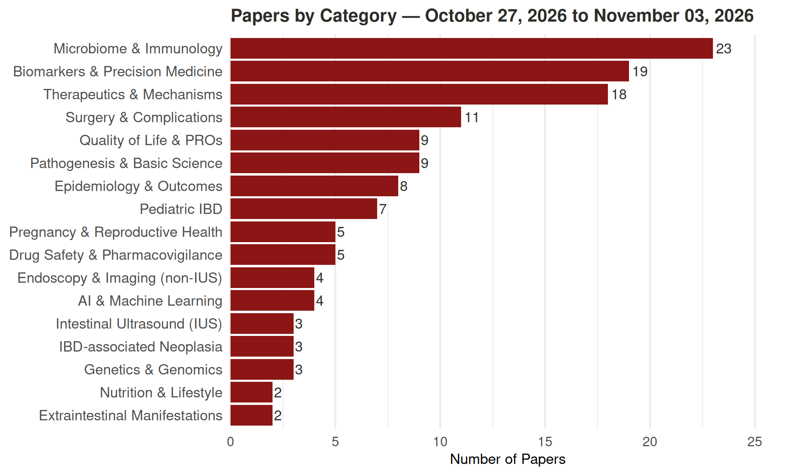

IBD Literature Report
Coverage: October 31, 2026 - November 07, 2026
109
Papers This Week
16
Categories
Papers by Category
Click a category to expand. Click a paper title to read its abstract.
Therapeutics & Mechanisms (25 papers)
Peripheral T- and B-cell immune signatures associated with response to vedolizumab in ulcerative colitis.★ Inflammatory bowel diseases | 2026-11-06
Vedolizumab (VDZ) blocks integrin α4β7-MAdCAM-1 interactions, limiting leukocyte entry into the gut, yet peripheral-blood immune correlates of clinical response in ulcerative colitis (UC) remain unidentified. Peripheral blood mononuclear cells from healthy controls (HCs) and patients with UC, stratified by VDZ exposure and clinical response, were analyzed using mass cytometry (cytometry by time-of-flight). A 38-marker panel enriched for integrins, chemokine receptors, and activation markers was applied. Major immune populations were interrogated using lineage-specific opt-SNE and FlowSOM clustering. The dataset included 26 HCs, 30 VDZ-naive UC (Nancy index ≥ 2), 8 VDZ-treated non-responders (Nancy index ≥ 2), and 8 VDZ-treated responders (Nancy index <2). No significant differences were detected in myeloid, NK-cell, or TCRγδ+ T-cell compartments. Integrin α4β7+ cells were detected across multiple immune lineages and were enriched in the B-cell compartment. Between-group differences were observed in the CD4+ T-cell and B-cell compartments. VDZ responders showed enrichment of an α4β7+ effector memory CD4+ T-cell subset compared with VDZ-naive UC. In parallel, responders exhibited reduced frequencies of class-switched plasmablast and activated B-cell populations relative to VDZ-naive UC. Integrin-pairing analysis demonstrated that these B-cell populations contained both α4β7+ and α4β1+ cells. In contrast, VDZ non-responders showed enrichment of an α4β7+ atypical-like IgA+ memory B-cell subset relative to responders, VDZ-naive UC, and HCs. Clinical response and non-response to VDZ in UC are associated with distinct circulating T- and B-cell immune phenotypes. Peripheral-blood immunophenotyping may identify correlates of response and non-response. Prospective studies are needed to determine whether these signatures are predictive before VDZ initiation or reflect pharmacodynamic changes after treatment.
Horitani S, Horitani A, Tyler CJ, Naganuma M, Ernst PB, Smith D, Patel DR, Behm B, Yarur A, Rivera-Nieves J
Baseline serum glycoprotein acetylation predicts early but not late relapse after infliximab withdrawal in Crohn’s disease: metabolomic analysis of the STORI and SPARE trials.★ Gastroenterology | 2026-11-06
Abstract not available.
Radford-Smith DE, Anthony DC, Probert F, Colombel JF, Satsangi J, Louis E
Efficacy and safety of ustekinumab and vedolizumab in very early-onset inflammatory bowel disease: A multicenter study from the pediatric inflammatory bowel disease Porto Group of ESPGHAN. Journal of pediatric gastroenterology and nutrition | 2026-11-05
We aimed to assess vedolizumab and ustekinumab efficacy and safety in patients with very-early onset inflammatory bowel disease (VEO-IBD). A retrospective study involving 29 European and North American sites affiliated with the IBD Porto Group of European Society for Paediatric Gastroenterology Hepatology and Nutrition. Clinical and laboratory data were collected from patients with VEO-IBD who commenced vedolizumab or ustekinumab before 6 years of age, between 2014 and 2024. Ninety-six patients (60.4% females) were included (58 ulcerative colitis, 29 Crohn’s disease, and 9 IBD-Unclassified). Median (Q1-Q3) age at diagnosis was 2.3 (0.4-4.2) years, 37 (38.5%) patients were diagnosed at age <2 years old. Thirty-seven (38.5%) patients received ustekinumab, 67 (69.7%) vedolizumab, and 11 (11.5%) both drugs. Median (Q1-Q3) follow-up time was 11 (6-26) and 14 (7-39) months for ustekinumab and vedolizumab, respectively. Eighty (84.2%) patients were previously treated with infliximab, 23 (24.2%) with adalimumab, and 20 (20.8%) with both. The median (Q1-Q3) time from diagnosis to vedolizumab and ustekinumab initiation was 15 (9-26) and 20 (11-36) months, respectively. Ustekinumab-treated patients achieved clinical remission in 24.3%, 51.4%, and 40.5% at end of induction, week 26, and week 52, with steroid-free remission in 18.9%, 45.9%, and 35.3%, respectively. Vedolizumab-treated patients achieved clinical remission in 29%, 47.5%, and 40.3%, with steroid-free clinical remission (SFCR) rates of 10.4%, 43.3%, and 37.3% at the same time points. Infectious adverse events were reported in 3 (8.3%) of ustekinumab-treated and 5 (7.6%) vedolizumab-treated patients, none severe. Ustekinumab and vedolizumab demonstrated high therapeutic durability in patients with VEO-IBD; 1-year rates of SFCR were modest.
Scarallo L, Lionetti P, Kierkus J, Collen L, Riedl V, Jakobsen C, Pujol-Muncunill G, Kolho KL, Velasco Rodriguez-Belvis M, Mitrova K
Effects of upadacitinib on lipid profiles and their relationship with inflammation in patients with inflammatory bowel disease: a real-world longitudinal cohort study.★ Inflammatory bowel diseases | 2026-11-05
Upadacitinib (UPA), a selective Janus kinase 1 inhibitor, is approved for moderate-to-severe inflammatory bowel disease (IBD). JAK inhibitors affect lipid metabolism, but longitudinal real-world data on lipid changes during UPA therapy, and their relation to inflammatory activity, are scarce. In this single-center retrospective cohort study, patients with ulcerative colitis or Crohn’s disease treated with upadacitinib were followed for up to 2 years. Serial fasting lipid profiles and inflammatory markers (fecal calprotectin, C-reactive protein [CRP], high-sensitivity CRP) were collected at baseline, end of induction (weeks 8-12), 1 year, and 2 years. Lipid trajectories were analyzed with linear mixed-effects models; paired changes were compared with paired t-tests. Among 159 patients (mean age 43.3 ± 14.0 years; 62.3% male), total cholesterol (TC) rose from 4.19 ± 0.87 mmol/L at baseline to 4.92, 5.03, and 5.21 mmol/L at the end of induction, 1 year, and 2 years (mixed-effects estimates +0.70 to +0.90; all P < .001). Low-density lipoprotein cholesterol (LDL-C) and high-density lipoprotein cholesterol (HDL-C) rose in parallel, and the LDL-C/HDL-C ratio did not increase. CRP reductions correlated with lipid rises (Spearman rho = -0.45 to -0.47; all P ≤ .02). No cardiovascular death, myocardial infarction, or stroke occurred (0/159); one venous thromboembolism and 3 hypertension cases were recorded. In patients with IBD treated with UPA, TC and LDL-C rose modestly alongside the resolution of inflammation; HDL-C improved and the LDL-C/HDL-C ratio did not increase. Lipid monitoring and individualized cardiovascular risk assessment are warranted during UPA therapy.
He S, Zhang W, Tian Y, Ge C, Teng G, Li J, Wang H, Dai Y, Tian Y
A Real-World Population Pharmacokinetic Model of Adalimumab in Inflammatory Bowel Disease to Support Model-Informed Precision Dosing in Routine Clinical Practice. European journal of drug metabolism and pharmacokinetics | 2026-11-05
Translating population pharmacokinetic (popPK) models of adalimumab in inflammatory bowel disease (IBD) into clinical practice remains challenging. We aimed to develop a parsimonious popPK model using real-world therapeutic drug monitoring data and perform dosing simulations to guide model-informed precision dosing (MIPD). We conducted a retrospective, longitudinal study of adult IBD patients treated with adalimumab between 2022 and 2024. Serum adalimumab concentrations from routine therapeutic drug monitoring were analysed using nonlinear mixed-effects modelling. Covariates were selected using a stepwise likelihood ratio approach. Model performance was evaluated using goodness-of-fit (GOF) plots, prediction-corrected visual predictive checks (pcVPC), normalised prediction distribution errors (NPDE), sequential Bayesian forecasting analysis, and bootstrap analysis. Monte Carlo simulations estimated the probability of target attainment (PTA) for steady-state trough concentration thresholds of ≥ 8, ≥ 10, and ≥ 12 mg·l⁻1 across different body weight, serum albumin, and dosing scenarios. From 201 patients (56.2% male; 48.6 (±16.2) years), 709 trough concentrations were analysed. A one-compartment model with first-order elimination and absorption (fixed at 0.151·day⁻1) adequately described the pharmacokinetics. Population estimates were apparent clearance (CL/F) 0.288 l·day⁻1 and apparent volume of distribution 5.0 l. Body weight and serum albumin were significant covariates on CL/F, reducing interindividual variability from 59.2% to 42.0%. Model performance was consistent across evaluation methods. Individual parameter estimation was reliable with low CL/F shrinkage (11.1%). Predictive performance was robust: minimal bias (mean prediction error [MPE]: -0.30 mg·l⁻1) and high precision (root mean square error [RMSE]: 3.86 mg·l⁻1). pcVPC demonstrated good agreement (91.0% coverage), and NPDE indicated no structural misspecifications. Sequential forecasting analysis showed that predictive performance improved as more data were incorporated (MPE decreased from 0.37 to 0.03 mg·l⁻1), and precision increased (RMSE decreased from 4.86 to 4.39 mg·l⁻1). Under standard maintenance dosing, PTA ranged from 65.0% to 98.5%, from 36.5% to 93.5%, and from 20.5% to 86.5% for ≥ 8 mg·l⁻1, ≥ 10 mg·l⁻1, and ≥12 mg·l⁻1 respectively. PTA decreased with increasing body weight, lower serum albumin, and more stringent concentration thresholds. This popPK model adequately characterizes adalimumab pharmacokinetics in IBD patients. Its robust predictive performance, which progressively improves as more individual data are incorporated, together with the model-based simulations, supports its potential utility in MIPD, particularly in patients with higher clearance or when higher concentration thresholds are targeted.
Aguilo-Lafarga I, Serés-Noriega T, Gimeno-Ballester V, Roche PAC, Lidon RV, Moros EMS, Gallego S, Lopez SG, Sazatornil MRA
Performance of an infliximab precision-guided dosing tool from a capillary blood-based self-collection device in inflammatory bowel disease patients.★ Inflammatory bowel diseases | 2026-11-05
Infliximab (IFX) trough concentrations are routinely measured to guide dosing and optimize efficacy. Bayesian forecasting tools may enable earlier prediction of trough concentrations, while patient-friendly capillary self-collection devices could improve access to precision-guided dosing (PGD). We evaluated the performance of the PredictrPK IFX platform in forecasting IFX trough concentrations by using serum collected with an upper-arm self-collection device and compared its performance with standard venous blood obtained by phlebotomy. Patients with inflammatory bowel disease (IBD) receiving IFX maintenance therapy were recruited from a single IBD center. Midcycle samples collected via an upper-arm self-collection device and via traditional venipuncture were compared. The IFX clearance was estimated by use of a nonlinear mixed-effects model with Bayesian priors and the predicted IFX levels were compared with measured trough concentrations obtained prior to infusions. Deming regression was used for statistical analysis. The study included 57 patients (61% males, median age, 34 years). The median IFX dose was 10 mg/kg with a median interdose interval of 6 weeks. A total of 97 capillary and venous blood pairs were tested. Concentrations of IFX from venous and capillary blood samples demonstrated strong correlations (R2 = 0.987, Demings = 1.08). There was also a strong association between predicted IFX concentrations and measured IFX trough concentrations. PredictrPK accurately predicted IFX trough concentrations. Capillary self-collection using an upper-arm device yielded results comparable to those from venous blood measurement, which may facilitate increased implementation and accessibility of PGD in clinical practice.
Law CCY, Djalal A, Hopkins M, Trick D, Dervieux T, Rowan C, Colombel JF
Microbial metabolism of methotrexate produces a STAT3 signaling molecule that alleviates gut inflammation. Cell host & microbe | 2026-11-05
Methotrexate (MTX) is a gold standard therapy for inflammatory diseases but has mixed therapeutic success in inflammatory bowel disease (IBD). The gut microbiota impact MTX efficacy and toxicity by metabolizing MTX and altering its bioavailability, yet how inflammation alters this metabolism, and how the resulting metabolites act on the host, remain poorly understood. Here, we find that gut microbes, notably Clostridium asparagiforme, metabolize MTX via carboxypeptidase G2 (CPDG2) to produce deoxyaminopteroic acid (DAMPA). In intestinal epithelial cells, DAMPA preserves mitochondrial health through mitochondrial signal transducer and activator of transcription 3 (STAT3) signaling and enhances mitophagy. DAMPA administration attenuates intestinal inflammation in vivo, and remodels colonic mitochondrial pathways. IBD mouse models show reduced microbial CPDG2 and DAMPA, while patients with IBD show reduced CPDG2 gene abundance and suppressed DAMPA-enriched mitochondrial pathways, potentially explaining MTX outcomes in IBD. Together, these findings reframe microbial MTX metabolism from passive drug detoxification to active regulation of host mitochondrial and inflammatory homeostasis.
Cho J, Danner R, Kim WS, Lopez L, Williams J, Singh A, Han JA, Van Vranken JG, Walker AS, Rhoads TW
Effects of low-dose atorvastatin combined with reduced-dose prednisolone in acetic acid-induced ulcerative colitis in rats. Immunologic research | 2026-11-05
Long-term corticosteroid treatment for ulcerative colitis (UC) is often limited by dose-dependent adverse effects, highlighting the need for strategies that reduce steroid exposure. This study evaluated the efficacy of a combination of half-doses of Atorvastatin and Prednisolone in rats with acetic acid-induced colitis. Thirty-five rats were allocated to five groups (n = 7 per group): normal control, vehicle-treated UC control, UC treated with atorvastatin (10 mg/kg/day, orally), UC treated with prednisolone (10 mg/kg/day, orally), and UC treated with the combination of atorvastatin (5 mg/kg/day) plus prednisolone (5 mg/kg/day), orally. Treatment continued for 10 days. Disease activity index (DAI), colonic edema index, histopathological leukocyte infiltration, pro-inflammatory cytokines, myeloperoxidase (MPO), malondialdehyde (MDA), nitric oxide (NO), and tissue levels of Nrf2, HO-1, and NF-kB were evaluated. Compared with untreated UC, all treatment groups showed attenuation of disease-associated changes. The half-dose combination was associated with the lowest cumulative DAI and day-10 DAI, markedly reduced leukocyte infiltration, and lower MPO and inflammatory cytokine levels than either monotherapy in several comparisons. It also normalized MDA and brought NF-kB levels toward those observed in healthy controls, while increasing Nrf2 and HO-1 levels. These findings indicate that low-dose atorvastatin combined with reduced-dose prednisolone can attenuate experimental colonic injury and inflammation more strongly than either monotherapy under the conditions tested.
Qaderi M, Abtahi Froushani SM
Guselkumab resolved refractory Crohn’s disease-associated peritendinous inflammation documented by serial ultrasonography and magnetic resonance imaging. Scandinavian journal of rheumatology | 2026-11-04
Letter on: ‘Impact of Prior Biologic Mechanism of Action on Anti-TNF Effectiveness in Inflammatory Bowel Disease: An ENEIDA Registry Study’. Authors’ Reply.Letter★ Alimentary pharmacology & therapeutics | 2026-11-04
Abstract not available.
Yagüe Caballero C, García-López S, Casas-Deza D
Letter on: ‘Impact of Prior Biologic Mechanism of Action on Anti-TNF Effectiveness in Inflammatory Bowel Disease: An ENEIDA Registry Study’.Letter★ Alimentary pharmacology & therapeutics | 2026-11-04
Abstract not available.
Tyagi B, Ratnakar PJ, Mantravadi HB, Nainwal P, Srinivasan H
Long-Term Follow-up of Azathioprine-Induced Portosinusoidal Vascular Disease in a Patient With Crohn’s Disease.Case report ACG case reports journal | 2026-11-04
Azathioprine is widely used to treat inflammatory bowel disease, organ transplantation, and autoimmune disorders. Hepatotoxicity is a rare but serious complication. We report a 48-year-old man with ileocolonic Crohn’s disease who developed azathioprine-induced portosinusoidal vascular disease (PSVD) after 15 years of treatment. Diagnosis was suspected due to persistent cytopenia (leukopenia and thrombocytopenia) and when transabdominal ultrasonography and upper gastrointestinal endoscopy showed signs of portal hypertension. There was also an extensive portal thrombosis in the right portal vein, portal bifurcation, and origin of the left portal vein. Liver biopsy confirmed PSVD, showing nodular regenerative hyperplasia, sinusoidal dilation, and obliterative portal venopathy without cirrhosis. Treatment included azathioprine discontinuation, carvedilol, and anticoagulants. After 4 years of follow-up, Crohn’s disease remained in deep remission, portal thrombosis recanalized, and portal hypertension stabilized. This case highlights the importance of monitoring for PSVD in long-term thiopurine users.
Azizi F, Ouldgougam R, Aouameur Y, Bourezak SES, Gasri M, Amir ZC, Boudjella MEA
Postoperative vedolizumab in Crohn’s disease: interpreting persistence, endoscopic recurrence, and treatment strategy.Letter Digestive and liver disease : official journal of the Italian Society of Gastroenterology and the Italian Association for the Study of the Liver | 2026-11-03
Interpreting Model-estimated Infliximab Exposure and Infection Risk in Inflammatory Bowel Disease. Journal of clinical gastroenterology | 2026-11-03
Early decline in anti-integrin αvβ6 autoantibodies strongly predicts 1-year clinical remission in vedolizumab-treated patients with ulcerative colitis. eGastroenterology | 2026-11-02
Anti-integrin αvβ6 immunoglobulin G autoantibodies have emerged as one of the most accurate non-invasive biomarkers for ulcerative colitis (UC). We aimed to validate their diagnostic performance in a French multicentre cohort of patients with inflammatory bowel disease (IBD) and to evaluate their predictive value for vedolizumab clinical response. We performed a multicentre, non-interventional post hoc analysis using prospectively collected serum samples and clinical data from two parent prospective observational studies: VEDOPREDIRESP (patients with IBD initiating vedolizumab) and GOLILOR (patients with UC undergoing golimumab dose intensification). Serum anti-αvβ6 autoantibody titres were quantified by ELISA at baseline and week 6 (VEDOPREDIRESP) or week 8 (GOLILOR), blinded to clinical outcomes. The primary endpoint was sustained clinical remission at week 52. In the VEDOPREDIRESP cohort (n=115; 67 UC, 48 Crohn’s disease (CD), sustained clinical remission at week 52 was achieved in 54% of patients with UC. Baseline serum anti-αvβ6 autoantibody titres were significantly higher in UC than in CD (median 271 ng/mL (IQR 38-884) vs 5.2 ng/mL (2.5-10), p<0.001), with seropositivity (>9.1 ng/mL) in 94% vs 19%, respectively. Receiver operating characteristic (ROC) analysis confirmed excellent diagnostic performance to discriminate between UC and CD (area under the ROC curve (AUC) 0.93; optimal cut-off 15 ng/mL; sensitivity 92%, specificity 95%). In patients with UC treated with vedolizumab, titres declined significantly from baseline to week 6 (median 243 ng/mL (176-884) to 190 ng/mL (89-320), p=0.040). A >30% reduction at week 6 strongly predicted sustained remission at week 52 (AUC 0.79; sensitivity 78%, specificity 80%). Multivariable analysis identified this early decline as the only statistically significant independent predictor of 1-year remission (adjusted OR 5.36, 95% CI 1.12 to 8.54, p=0.040). Notably, in an independent cohort of 47 patients with UC undergoing golimumab dose intensification, there was no reduction in median serum anti-αvβ6 autoantibody levels, with levels remaining stable from 197 ng/mL at week 0 to 205 ng/mL (97-457) at week 8 (p=0.730). Anti-αvβ6 autoantibodies robustly discriminate UC from CD. In patients with UC treated with vedolizumab, their early and selective decline predicts clinical remission at 1 year and provides a precision tool to optimise gut-selective therapy in real time.
Roblin X, Mechi F, Berger AE, Fumery M, Nancey S, Hébuterne X, Carbonnel F, Altwegg R, Barrau M, Sparrow MP
Shorter infliximab infusion times without premedication do not increase adverse reactions. Journal of pediatric gastroenterology and nutrition | 2026-11-02
Infliximab (IFX) infusions for paediatric inflammatory bowel disease (IBD) are resource intensive and time-intrusive on patient’s lives. Longer infusion times and administering routine pre-medications compound such timelines, despite limited supporting evidence. This study investigated whether discontinuing routine premedication and shortening IFX infusion durations increased infusion reaction rates. This retrospective comparative cohort study analysed data from 1083 IFX infusions (369 patients) at a single national referral centre. It compared a cohort receiving routine dual hydrocortisone/chlorphenamine premedication with longer infusion times (2.5 h induction/90 min maintenance; Group A) with a subsequent cohort without universal premedication and shorter infusions (2 h induction/60 min maintenance; Group B). The primary outcome was the rate of acute infusion reactions; secondary outcomes included anti-IFX antibody formation and rates of post-infusion reactions. There were 346 infusions in Group A and 737 infusions in Group B. Shorter infusions and omitting routine premedication did not increase acute infusion reaction rates (Group A: 1.5/100 vs. Group B: 1.1/100 infusions, p = 0.6; odds ratio 0.75 [0.24, 2.3]). Universal premedication neither reduced early anti-IFX antibody positivity by first maintenance dose (n = 51; 33% vs. 17%, p = 0.23) nor overall antibody prevalence (31% vs. 37%, p = 0.164). No reactions occurred during extended post-infusion observation periods in either group. Neither longer infusion times, universal pre-medication nor prolonged post-infusion observation significantly enhanced patient safety or reduced anti-drug antibody formation. Practice modification could reduce treatment burden for patients and families and improve healthcare efficiency.
Lane M, Almaiman A, Obasi S, Broderick A, Bourke B, Dunne C, Fitzpatrick E, Stenke E, Stallard L, Quinn S
A cross-sectional study on pharmacotherapy and predictors of clinical remission in patients with inflammatory bowel disease. Indian journal of pharmacology | 2026-11-02
Inflammatory bowel disease (IBD) is a chronic, progressive, and disabling disorder that includes ulcerative colitis and Crohn’s disease, characterized by periods of remission and relapse. Pharmacological management is the primary treatment option with the goal to induce mucosal healing and reduce relapse rates. The main objective of the present study was to determine the pattern of pharmacotherapy and to evaluate the factors that predict clinical remission in patients with IBD. A cross-sectional analysis was conducted involving fifty participants diagnosed with IBD. All the participants met predefined study inclusion criteria and voluntarily provided written informed consent. Data encompassing patient demographics, clinical parameters, prescribed medications, and ADRs were collected. The disease activity was evaluated using Simple Clinical Colitis Activity Index/Harvey-Bradshaw Index score. Univariate and multivariate logistic regression analysis was done to assess predictors of clinical remission. The commonly prescribed drugs were mesalamine in 72%, steroids in 50%, and azathioprine in 46% patients. 30% patients had an ADR to the prescribed drug; the most common ADR was anemia and pancytopenia with azathioprine use. 52% patients were in clinical remission. Univariate analysis identified medication adherence as a significant predictor, which was confirmed on multivariate analysis. Patient’s adherent to medication were 32 times more likely to be in remission compared to nonadherent patients. Mesalamine and azathioprine were the most commonly prescribed monotherapy drugs. The most frequently prescribed combination therapies were mesalamine in conjunction with either steroids or azathioprine. Adherence to medication was the only factor statistically significantly linked to achieving clinical remission of the disease.
Shivanna A, Panchaksharimath P
S1P receptors in ulcerative colitis: spotlight on etrasimod.Review Expert opinion on pharmacotherapy | 2026-11-01
Ulcerative colitis (UC) is a chronic inflammatory bowel disease with a rising global incidence. Small molecules have transformed the treatment of UC. Specifically, sphingosine‑1-phosphate (S1P) receptor modulators are a newly available and expanding therapeutic option for patients with UC. This review analyzes the biology, efficacy, and safety of S1P receptor modulators. A literature search in PubMed regarding clinical studies published up to 1 June 2026, involving S1P receptor modulators in UC was analyzed. Clinical trial data and real-world evidence for approved S1P receptor modulators (ozanimod and etrasimod) and investigational agents (tamuzimod, mocravimod, and amiselimod) in UC treatment were gathered. Ozanimod and etrasimod both demonstrated superior efficacy over placebo in moderately to severely active UC. Both agents showed greater efficacy in biologic-naïve patients compared with biologic-exposed populations. Meta-analyses favored S1P receptor modulators over other UC therapies, particularly for inducing histologic improvement. Commonly reported adverse effects of S1P receptor modulators include elevated liver enzymes and transient asymptomatic bradycardia. Serious adverse events, including macular edema and severe infections, are rare, with infection rates comparable to those of placebo in the clinical trials. S1P receptor modulators represent a new and promising oral class of treatment for UC, showing effective results with a manageable safety profile. They are especially beneficial for patients with moderate disease severity and serve as an important option for those transitioning from traditional to advanced therapies. Although these agents have some unique safety concerns, most are mild and reversible.
Shafrir A, Allen A, Rubin DT
Forced degradation study of etrasimod: Structural elucidation and transformation pathways of its major degradation products. Journal of pharmaceutical sciences | 2026-11-01
Etrasimod is a sphingosine-1-phosphate receptor 1 (S1P1) receptor modulator and has been used for the treatment of moderate to severe ulcerative colitis. Understanding its chemical degradation behaviors is important for evaluation of intrinsic stability and degradation impurities. Herein, the degradation chemistry of solid etrasimod was systematically investigated under ICH-recommended stress conditions. Eight degradation products were detected by using reversed-phase HPLC, and three major products (DP-6, DP-4, and DP-2) was isolated and structurally elucidated by LC-MS combined with multidimensional NMR spectroscopy. DP-6 was assigned as an oxygenated lactone-containing degradation product, DP-4 as a ring-expanded dicarbonyl product, and DP-2 as an open-chain succinic acid derivative. Time-dependent transformation experiments demonstrated the conversion of DP-6 to DP-4 under oxidative conditions and DP-4 to DP-2 under alkaline conditions. These experimentally established transformation relationships, together with the structural information obtained for the major degradation products, support an interconnected degradation pathways involving oxidative transformation and subsequent alkaline hydrolysis. Overall, this study provides experimentally supported insights into the degradation chemistry and transformation relationships of etrasimod, which may facilitate the identification and monitoring of degradation impurities, the assessment of drug-substance stability, and the development of appropriate impurity control strategies during pharmaceutical development.
Qiu S, Jian R, Chen Y, Huang K, Zhou Z, Fan J
[Impact of tumor necrosis factor superfamily member 4 gene polymorphisms on the risk of Crohn’s disease and clinical efficacy of ustekinumab]. Zhonghua yi xue yi chuan xue za zhi = Zhonghua yixue yichuanxue zazhi = Chinese journal of medical genetics | 2026-11
To explore the impact of tumor necrosis factor superfamily member 4 (TNFSF4) gene polymorphisms on the risk and clinicopathological features of Crohn’s disease (CD), as well as the clinical efficacy of ustekinumab (UST). A total of 296 patients with CD diagnosed at the Department of Gastroenterology, The Second Affiliated Hospital of Wenzhou Medical University between January 2018 and August 2025, and 532 healthy controls were selected. Genotypes of TNFSF4 (rs3850641 and rs45454293) were detected using multiplex polymerase chain reaction-ligase detection reaction technique. According to the Montreal Classification Criteria of Crohn’s disease, the patients were divided into subgroups. The degree of clinical activity and intestinal inflammation degree of CD patients were evaluated by the Crohn’s disease activity index (CDAI) and Simplified Crohn’s disease endoscopic score (SES-CD), respectively. Unconditional Logistic regression model was used to analyze the distribution of TNFSF4 gene polymorphisms between the CD group and health control group, as well as between different subgroups of CD patients. Among them, a total of 247 cases receiving the routine UST therapy were divided into clinical response group (CDAI decreased by ≥ 100 points compared to week 0 or CDAI < 150 points) and clinical non-response group based on the changes in CDAI at week 8. They were also divided into mucosal healing group (SES-CD ≤ 2 points or no mucosal ulcer) and non-mucosal healing group based on the changes in SES-CD at week 34. Univariate Logistic regression was used to analyze the influencing factors for the clinical response and mucosal healing. Furthermore, unconditional Logistic regression was applied to assess the effect of TNFSF4 gene variants on the clinical response and mucosal healing. Generalized estimating equations were employed to analyze the effect of TNFSF4 gene polymorphisms on the longitudinal changes of efficacy outcomes. Bonferroni correction was applied for multiple comparisons. The variant genotype (AG+GG) and variant allele (G) of rs3850641 in the CD group were more frequent than those in the control group (38.18% vs. 29.32%, P = 0.011, adjusted P = 0.022; 21.45% vs. 16.45%, P = 0.015, adjusted P = 0.030). The same conclusion was also drawn for the variant genotype (CT+TT) and variant allele (T) of rs45454293 (35.81% vs. 27.26%, P = 0.012, adjusted P = 0.024; 19.59% vs. 14.76%, P = 0.014, adjusted P = 0.028). Although the homozygous variant genotype (TT) of rs45454293 was more frequent among patients with stricturing or penetrating CD compared with those with non-stricturing, non-penetrating CD (5.93% vs. 1.24%, P = 0.041), the adjusted P value was over 0.05 after Bonferroni multiple correction. At week 8 of the UST therapy, the homozygous variant genotype (GG) of rs3850641 in the response group was less prevalent compared with the non-response group (1.69% vs. 11.59%, P = 0.004, adjusted P = 0.008). Similar result was obtained for the homozygous variant genotype (TT) of rs45454293 (1.69% vs. 10.14%, P = 0.008, adjusted P = 0.016). At week 34, the homozygous variant genotype (GG) of rs3850641 in the mucosal healing group was less common compared with the mucosal non-healing group (1.27% vs. 10.11%, P = 0.015, adjusted P = 0.030). The rs3850641 and rs45454293 variants may not only increase the risk of CD, but also reduce the early clinical response rate of the UST therapy. The rs3850641 variant may also lower the late mucosal healing rate of the UST therapy.
Li N, Xiong Y, Zhu X, Hu D, Ma G, Xu Y, Jiang Y
DOI: 10.3760/cma.j.cn511374-20260115-00020 | View on PubMed →
Anti-TNF Therapy Is Associated With Browning- and Immune-Related Changes in Creeping Fat in Crohn’s Disease.Observational study★ United European gastroenterology journal | 2026-11
Creeping fat (CrF) in Crohn’s disease (CD) is a metabolically active perilesional adipose tissue involved in intestinal inflammation. Whether biological therapies modify its browning-associated phenotype remains largely unexplored. We investigated whether anti-TNF treatment is associated with changes in browning-, mitochondrial biogenesis- and immune-related pathways in CrF and whether similar molecular changes occur following ex vivo infliximab exposure. Two independent human cohorts were analysed. (1) Observational cohort: CrF biopsies from anti-TNF-treated and anti-TNF-naïve CD patients (n = 14 and n = 19, respectively) were analysed for metabolic and inflammatory gene and protein expression. AdMSCs and mature CrF-derived adipocytes were isolated, and UCP1 protein abundance was assessed by immunohistochemistry and western blotting. (2) Ex vivo cohort: Paired CrF explants from anti-TNF-naïve patients with CD undergoing surgery were cultured with or without infliximab (5 mg/kg-equivalent, 24 h) and analysed by RT-qPCR and immunohistochemistry. Anti-TNF-treated patients showed higher UCP1 expression in CrF at mRNA and protein levels. CrF-derived mature adipocytes from treated patients exhibited increased expression of browning-/thermogenesis- and mitochondrial biogenesis-associated genes, together with reduced selected pro-inflammatory markers. AdMSCs also showed exploratory differences in their conditioned-medium protein profile, although no protein remained significant after FDR correction. Ex vivo infliximab exposure was associated with changes in selected browning-, mitochondrial biogenesis- and immune-related markers. Together, the observational and ex vivo findings identify CrF as an anti-TNF-responsive immunometabolic compartment in CD, characterised by coordinated browning-, mitochondrial biogenesis- and immune-related molecular changes. Functional studies are needed to establish the metabolic significance of these changes.
Monfort-Ferré D, Ginés I, Cepero C, Cabré L, Caro A, Menacho M, Gené M, Garcia M, Lahoz MDC, Mañas MJ
Safety of Janus kinase inhibitors, ustekinumab, and anti-interleukin-23 in older patients with immune-mediated diseases.Review★ Clinical gastroenterology and hepatology : the official clinical practice journal of the American Gastroenterological Association | 2026-10-31
Data on the safety of newer advanced therapies (AT) for immune-mediated inflammatory diseases (IMIDs) remain limited in older patients, and how the underlying IMID type influences treatment safety is unknown. We systematically searched PubMed/MEDLINE and Embase for studies evaluating the safety of anti-IL12/23 and -IL23 agents, and JAKi in older patients with IMIDs, including inflammatory bowel disease, rheumatoid arthritis, and psoriasis. Eligible studies included patients who initiated therapy at age ≥50 years and reported outcomes in comparison with (1) younger patients receiving the same therapy, (2) older patients receiving non-AT, or (3) older patients receiving a different AT. Data on infections, major adverse cardiovascular events (MACE), venous thromboembolism (VTE), malignancy, and mortality were extracted. Pooled odds ratios (ORs) and 95% confidence intervals (CIs) were estimated using a DerSimonian-Laird random-effects model. Seventy-nine studies were included. Compared to other AT, JAKi were associated with a higher risk of infections (OR 1.38; 95% CI, 1.22-1.55) and serious infections (1.27; 1.06-1.52). No increase in MACE, VTE, or malignancy risk was seen overall. Among adults > 60 years, there was an increased risk of VTE in rheumatologic cohorts (3.28; 1.16-9.27) that was absent in IBD (0.99; 0.58-1.70) (p for difference = 0.045). Compared with anti-TNF, Anti-IL-12/23 and -IL-23 agents had a lower risk of serious infections (0.76; 0.68-0.84). In older patients with IMIDs, anti-IL-12/23 and -IL-23 agents had lower serious infection risk while JAKi had an increased risk. JAKi showed a possible disease-specific thromboembolic signal in rheumatologic but not IBD cohorts.
Le Cosquer G, Ranjan MK, Kochar B, Faye AS, Singh S, Ananthakrishnan AN
Comparative effectiveness of IL-12/23 and IL-23 inhibitors versus JAK inhibitors in patients with inflammatory bowel disease and hidradenitis suppurativa: a real-world propensity-matched analysis. Crohn’s & colitis 360 | 2026-10-30
Inflammatory bowel disease (IBD) and hidradenitis suppurativa (HS) frequently coexist and share overlapping immune pathways, yet comparative real-world outcomes between IL-12/23 or IL-23 inhibitors and Janus kinase (JAK) inhibitors in this population remain poorly defined. We conducted a retrospective cohort study using a large, multicenter, real-world dataset. Adults (≥16 years) with IBD and HS who initiated an IL-12/23 or IL-23 inhibitor after anti-TNF therapy or a JAK inhibitor were included; patients with prior exposure to the opposing drug class were excluded. Propensity score matching (1:1) yielded 150 patients per cohort. Outcomes from 30-365 days included acute care utilization, corticosteroid use, IBD complications, and overall and hidradenitis-specific antibiotic use. After propensity score matching, 300 patients were included (150 per cohort; mean age 38 years; 75.3% female). Rates of emergency department visits or hospitalization were similar between groups (RR 1.20, 95% CI, 0.82-1.77). Corticosteroid use risk was numerically higher in the IL-12/23 or IL-23 cohort (RR 1.20, 95% CI, 0.98-1.46). IBD-related complications did not differ significantly (RR 1.06, 95% CI, 0.58-1.93). Overall antibiotic use was comparable, while hidradenitis-specific antibiotic use was higher in the IL-12/23 or IL-23 cohort (RR 1.47, 95% CI, 1.11-1.95). In this real-world analysis, IL-12/23 or IL-23 inhibitor therapy was associated with higher hidradenitis-specific antibiotic use and numerically greater but statistically nonsignificant corticosteroid exposure, while hospitalization and IBD-related complications were comparable. These findings should be interpreted cautiously given the absence of validated disease-activity measures; prospective studies are needed to inform optimal therapeutic selection.
Hafez Y, Osman A, Syn WK, Shmais M
Real-world success of de-escalating upadacitinib induction dosing in ulcerative colitis is predicted by steroid-free clinical and biochemical remission, not induction duration. Crohn’s & colitis 360 | 2026-10-29
Data guiding upadacitinib dose de-escalation in ulcerative colitis (UC) are limited. We evaluated factors associated with UC-related complications (UCRC) after upadacitinib was reduced from 45 mg daily. This retrospective study included adults with UC at a tertiary center who underwent upadacitinib de-escalation (4/2022-11/2025). The primary outcome was a 12-month composite of UCRC (upadacitinib re-escalation or discontinuation, new systemic steroids, new advanced therapy, hospitalization, or colectomy). Predictors of UCRC after de-escalation were assessed using Cox proportional hazards modeling, including steroid-free clinical remission (SFCR), defined as a stool frequency subscore of 0 or 1 and a rectal bleeding subscore of 0 without systemic steroid use, and biochemical remission, defined as a fecal calprotectin (FC) < 150 μg/g or a C-reactive protein (CRP) < 5 mg/L when FC was unavailable. Optimal CRP and FC cut points were identified via ROC curves. Among 70 patients, 25 (35.7%) experienced UCRC (median follow-up 56 weeks). Induction duration, prior advanced therapy exposure, and endoscopic severity did not differ significantly between those with and without UCRC. Patients without UCRC were more likely to have achieved SFCR (51.1% vs 20.0%, P=.01) and biochemical remission (53.3% vs 28.0%, P=.04) prior to de-escalation, with lower median CRP (0.8 vs 1.5 mg/L, P=.04) and FC (79.5 vs 208.0 μg/g, P=.03). In multivariable analysis, achieving SFCR (aHR 0.33, 95% CI, 0.12-0.91) and biochemical remission (aHR 0.34, 95% CI, 0.13-0.85) independently predicted lower UCRC risk, and achieving both conferred additional UCAE-free survival benefit. Optimal cut points predicting UCRC were CRP > 12.7 mg/L (sensitivity 40%, specificity 93%) and FC > 58.7 μg/g (sensitivity 100%, specificity 47%). SFCR and biochemical remission prior to upadacitinib de-escalation, but not induction duration, predict lower UCRC risk. Upadacitinib de-escalation should be guided by response assessment rather than a predetermined induction duration.
Dalal RM, Rotondo-Trivette S, Mason AR, Leveille L, Yin J, Missi C, Boktor M, Fudman DI
Overcoming primary non-response to infliximab in ulcerative colitis: monocyte-derived PTGS2 as a therapeutic target. Frontiers in immunology | 2026-10-20
Primary non-response (PNR) to infliximab (IFX) remains a major therapeutic challenge in ulcerative colitis (UC). However, the molecular mechanisms underlying this treatment failure remains unelucidated. Therefore, there is an urgent need to identify the key drivers of PNR and develop effective interventions to improve therapeutic outcomes. Human colonic RNA-sequencing data were analyzed to identify molecular features associated with PNR to IFX. Immune infiltration analysis, clinical sample validation, virtual gene knockout, and single-cell RNA sequencing were performed to characterize the immune landscape, identify the key regulatory molecule, and elucidate its underlying mechanisms and cellular source. Network pharmacology and molecular docking were employed to identify a potential therapeutic strategy targeting the key regulatory molecule, followed by mechanistic and functional validation in cell-based assays and therapeutic evaluation in a DSS-induced murine colitis model. Excessive colonic neutrophil infiltration marked PNR in UC prior to IFX treatment. PTGS2 positively correlated with neutrophil infiltration and was predominantly expressed in colonic CD14+S100A9+ inflammatory monocytes. Virtual knockout of PTGS2 altered genes related to neutrophil chemotaxis, which were primarily enriched in the NF-κB signaling axis. Gegen Qinlian Decoction (GQD), a traditional Chinese herbal formula, was identified to target PTGS2 through multiple bioactive constituents, with quercetin exhibiting the highest binding affinity. Quercetin suppressed LPS-induced PTGS2 expression in inflammatory monocytes, thereby inhibiting the NF-κB/CXCL8 signaling and attenuating neutrophil chemotaxis, as further supported by PTGS2 knockdown and overexpression experiments. In vivo, GQD markedly reduced PTGS2 expression and neutrophil accumulation in the inflamed colon, thereby significantly ameliorating disease severity and enhancing IFX responsiveness in DSS-induced colitis. Monocyte-derived PTGS2 contributes to primary IFX non-response by promoting neutrophil recruitment in UC. GQD improves IFX responsiveness by suppressing PTGS2-associated inflammatory signaling and neutrophil recruitment, highlighting its potential as a therapeutic strategy to enhance IFX efficacy.
Pu D, Kang X, Gou L, Li X, Wang P, Qi G, Liu JL, Zhang D
Microbiome & Immunology (14 papers)
A homogeneous acidic polysaccharide from Guangxi-cultivated Alpiniae Oxyphyllae fructus attenuates DSS-induced ulcerative colitis by remodeling the amino acid metabolism-microbiota-barrier axis.★ International journal of biological macromolecules | 2026-11-06
Ulcerative colitis (UC) is a chronic intestinal inflammatory condition with limited management options, driving interest in food-derived bioactive polysaccharides as potential dietary interventions. Alpiniae Oxyphyllae Fructus (AOF), an edible and medicinal plant traditionally used for gastrointestinal health, is widely cultivated in Guangxi, China; however, polysaccharides from Guangxi-grown AOF have not been systematically characterized, and their structure-activity relationships in UC remain undefined. In this study, a homogeneous acidic polysaccharide (AOFP-3) was isolated from Guangxi-cultivated AOF and structurally characterized. Its anti-UC activity was evaluated in a dextran sulfate sodium (DSS)-induced mouse model by integrating untargeted metabolomics, targeted amino acid profiling, 16S rRNA sequencing, and immunohistochemistry. AOFP-3 was identified as a highly branched acidic heteropolysaccharide (Mw 19.728 kDa) rich in galacturonic acid (53.38%), with a putative backbone of alternating →4)-α-D-GalpA-(1 → and →4)-α-D-GalpA-6-OMe-(1 → residues. In DSS-induced UC mice, AOFP-3 dose-dependently alleviated weight loss, colon shortening, histopathological damage, and inflammation. Mechanistically, AOFP-3 treatment was associated with restoration of amino acid homeostasis, particularly involving branched-chain amino acids and the alanine/glycine-serine-threonine metabolic axis, with remodeling of the gut microbiota (enrichment of Akkermansia and Lactobacillus and suppression of Staphylococcus and Enterococcus) and repair of both physical (Occludin, Claudin-1, ZO-1) and chemical (MUC-2, goblet cells) barriers. These findings establish a structural and mechanistic basis for the bioactivity of Guangxi-grown AOF polysaccharides and support their further investigation as functional food ingredients for gut health promotion.
Xiang Y, He C, Yuan H, Wang E, Yan Z, Li Z, Liu C, Zhang Y, He J
Fecal neuraminidase correlates with inflammatory signatures and microbiome shifts in preclinical Crohn’s disease.★ Gut microbes | 2026-11-05
The mucus layer, rich in mucin glycoproteins, serves as a critical barrier to microbial invasion. Neuraminidases cleave terminal sialic acids from mucin glycans, a process that may influence mucus integrity, epithelial exposure to microbial antigens, and mucosal immune responses, making fecal neuraminidase activity a biologically relevant functional readout of host-microbe interactions in the context of Crohn’s disease (CD) pathogenesis. We evaluated whether fecal neuraminidase activity is associated with future CD risk and examine its relationships with inflammatory and microbial signatures relevant to early disease development. Within the prospective GEM cohort, 69 individuals who later developed CD were matched to 69 healthy first-degree relative controls. Fecal neuraminidase activity was measured using a fluorometric assay. Conditional logistic regression assessed its association with future CD risk. Partial Spearman correlations evaluated relationships with 446 serum proteins (OLINK), followed by pathway enrichment analysis, and with fecal calprotectin (FCP) and gut microbial composition (16S rRNA sequencing). Fecal neuraminidase activity was positively associated with future CD (OR = 1.541; 95% CI: 1.05-2.25; p = 0.026). Proteins correlated with neuraminidase activity were enriched in immune and inflammatory pathways. Neuraminidase activity was positively correlated positively with FCP (p ≤ 0.05), and its association with future CD was attenuated after adjustment for FCP. Fourteen microbial taxa were significantly correlated with neuraminidase activity (q ≤ 0.05). Fecal neuraminidase activity’s relationships with inflammatory markers and microbial taxa support its potential relevance as a functional marker of host-microbe alterations during preclinical CD.
Mu K, Dang CP, Xue M, Li Q, Huynh HQ, Griffiths AM, Turner D, Moayyedi P, Steinhart AH, Dieleman LA
Mucosal transcriptomic and fecal microbiome signatures associated with persistent symptoms in quiescent Crohn’s disease.★ Inflammatory bowel diseases | 2026-11-05
Persistent symptoms in quiescent Crohn’s disease (qCD + S) lack clear mechanistic explanations. Building on prior evidence linking qCD + S to sulfidogenic microbial metabolism, this study characterizes the underlying site-specific mucosal transcriptional programs and host-microbe interactions associated with qCD + S. We integrated paired metagenomic and transcriptomic data from a cross-sectional cohort of patients with qCD. Host-microbe interactions in the ileum and rectosigmoid colon were analyzed using differential expression, penalized regression, and sparse canonical correlation analysis. qCD + S was associated with transcriptional differences in separate analyses of ileal and rectosigmoid samples. The ileum showed reduced expression of genes related to immune surveillance, whereas the rectosigmoid colon exhibited reduced chemokine-related and increased ribosomal gene expression. Multi-omic integration identified associations between previously identified sulfidogenic microbes and mucosal genes related to mitochondrial metabolism, epithelial homeostasis, and neurosensory signaling. Exploratory sparse canonical correlation analysis identified multivariate patterns involving oral-associated taxa and mucosal genes related to B-cell receptor signaling and RNA-processing. Persistent symptoms in qCD are mucosal transcriptional differences and fecal microbial features. These findings suggest a model in which altered immune regulation, microbial sulfur metabolism, and downstream epithelial and metabolic stress pathways contribute to symptom persistence despite quiescent inflammation, but this model requires mechanistic validation.
Guo K, Golob J, Berinstein J, Sheehan J, Chey WD, Higgins PDR, Young V, Rao K, Singh P, Bishu S
Lactobacillus Plantarum-Derived Extracellular Vesicles Alleviate DSS-Induced Colitis and Modulate Autophagy-Related Markers. Probiotics and antimicrobial proteins | 2026-11-05
Inflammatory bowel disease (IBD) encompasses a group of chronic inflammatory disorders of the intestine, which have been associated with a rising global incidence. Autophagy plays a crucial anti-inflammatory role in the context of intestinal inflammation. This study was designed to investigate the protective effects of Lactobacillus plantarum-derived extracellular vesicles (LpEVs) against dextran sodium sulfate (DSS)-induced colitis in mice and to elucidate the underlying mechanisms associated with autophagy. In this study, mouse intestinal epithelial cells (MODE-K) were pre-incubated with LpEVs and subsequently stimulated with lipopolysaccharide (LPS) to establish an inflammatory model. Our findings indicate that LpEVs can inhibit LPS-induced inflammation. Additionally, we explored the potential effects of LpEVs in alleviating DSS-induced colitis. C57BL/6 mice received LpEVs at a dose of 1 µg/g body weight by oral gavage before the induction of colitis with DSS. The results demonstrated that LpEVs significantly alleviated the severity of DSS-induced colitis. Furthermore, LpEVs exert anti-inflammatory activities, which are accompanied by alterations in autophagy-related markers and reduced NLRP3 expression, contributing to the alleviation of intestinal inflammation. These findings support the potential application of LpEVs for colitis intervention, thereby laying a scientific foundation for Lactobacillus-derived therapeutic strategies against colitis.
Zhang X, Ji X, Shan X, Wang A, Liu M, Zhang S, Qu G, Yin Y, Wang C, Hu J
Multi-matrix metabolome and microbiome profiling in diarrhea-predominant irritable bowel syndrome and ulcerative colitis in remission with IBS-like symptoms.★ Inflammatory bowel diseases | 2026-11-04
Irritable bowel syndrome (IBS)-like symptoms frequently persist in patients with ulcerative colitis (UC) in remission. Whether UC in remission with IBS-like symptoms (UCR-IBS) represents functional overlap with diarrhea-predominant IBS (IBS-D) or a distinct metabolic phenotype remains unclear. In this exploratory cross-sectional study, 39 patients with IBS-D, 21 with UCR-IBS, and 35 healthy controls were enrolled. Serum, urine, fecal, and colonic mucosal samples were collected. Untargeted metabolomics, targeted tryptophan profiling, fecal 16S ribosomal RNA gene sequencing, predicted microbial functional profiling, and microbe-metabolite association analyses were performed. Tryptophan-related metabolism was altered in both patient groups, but the patterns differed across biological matrices. Compared with IBS-D, UCR-IBS showed higher serum N-formylkynurenine (NFK) concentrations, and fecal findings suggested reduced concentrations of microbiota-associated indole metabolites. Microbiome differences were modest, but predicted nicotinate/nicotinamide metabolism was enriched in UCR-IBS. Exploratory network analysis identified associations between tryptophan-related metabolites and selected bacterial genera in each group. Multi-matrix profiling shows tryptophan-related metabolic differences between mesalazine-treated UCR-IBS and IBS-D, highlighting higher serum NFK concentrations in UCR-IBS. These findings provide a basis for investigating host-microbiota metabolic relationships across systemic and intestinal compartments during UC remission.This trial was registered in the Chinese Clinical Trial Registry (ChiCTR; https://www.chictr.org.cn/) under registration number ChiCTR2200060224.
Chen G, Du S, Li H, Wang H, Zhu H, Zhang Q, Yang R, Wu X, Shao B, Zhang Y
Microalgae and zinc-polyphenol networks functionalized alginate oral microspheres for synergistic treatment of inflammatory bowel disease. Biomaterials advances | 2026-11-02
Inflammatory bowel disease (IBD) is characterized by intestinal barrier disruption, oxidative stress, and dysregulated gut microbiota. Current therapies often fail to address these multifactorial pathologies simultaneously. Here, a hierarchical oral microsphere system, SP@QZnNPs@SA, was developed by integrating Spirulina platensis (SP) as a mucoadhesive carrier with quercetin-Zn2+ networks (QZnNPs) and a pH-responsive alginate shell for colon-targeted release. SP provides prolonged colonic retention and prebiotic activity, while QZnNPs synergistically alleviate oxidative stress and support epithelial barrier repair. The alginate shell protects the payload during gastrointestinal transit and enables controlled release in the inflamed colon. In vitro studies demonstrated effective ROS scavenging and promotion of macrophage polarization toward an anti-inflammatory phenotype. Oral administration in the colitis model led to alleviation of disease symptoms, reinforcement of epithelial barrier function, and beneficial reorganization of gut microbial composition. SP@QZnNPs@SA outperformed individual components, highlighting the synergistic effects of the hierarchical design. The study provides a translatable strategy for oral therapeutics targeting complex gastrointestinal disorders and offers a design blueprint for integrating living microalgal carriers with multifunctional nanoparticles.
Du Y, Zhou Z, Ouyang XK, Wang N
Macrophage-directed immunotherapy in Inflammatory bowel disease: advances in reprogramming intestinal phagocytes.Review Immunotherapy | 2026-11-01
Inflammatory bowel disease (IBD) is a chronic, relapsing inflammatory disorder characterized by dysregulation of the intestinal immune system, in which functional abnormalities of phagocytes such as macrophages play a critical role in pathogenesis. Although conventional therapies such as anti-tumor necrosis factor-α (TNF-α) antibodies are widely used in clinical practice, they have limitations including low response rates and significant side effects, creating an urgent need for novel therapeutic strategies. In recent years, macrophage-directed immunotherapy has emerged as a cutting-edge approach for IBD treatment by reprogramming intestinal phagocytes to restore immune homeostasis. Unlike previous reviews that primarily focus on the M1/M2 polarization framework, this review integrates recent single-cell discoveries of novel macrophage subsets (e.g. SPP1+ and TREM2+ macrophages), systematically examines the crosstalk among signaling, epigenetic, and metabolic regulatory layers, and critically evaluates translational barriers from preclinical models to clinical application. By evaluating preclinical and clinical studies, we assess the potential and challenges of these strategies. Through in-depth analysis, this review aims to provide a theoretical basis for the development of more precise and effective immunotherapies for IBD and to point out future research directions. (Literature search: PubMed, Web of Science, and Embase; January 2000-December 2025.). Inflammatory bowel disease (IBD), including Crohn’s disease and ulcerative colitis, is a long-term condition caused by the immune system attacking the gut. Current treatments do not work for everyone and can cause serious side effects. Macrophages are a type of immune cell that normally help heal the gut but become harmful in IBD. This review explains how scientists are trying to reprogram these cells to reduce inflammation and promote healing. We discuss several approaches, including using medicines, nanoparticles, gene editing, and cell therapy. We also highlight the challenges that must be solved before these treatments can reach patients, such as safety, cost, and manufacturing. Understanding these barriers will help guide future research and bring better treatments to people with IBD.
Shao Y, Yu S
Dynamic alterations in stool microbiota composition following faecal transplantation in patients with inflammatory bowel disease. Clinical and translational medicine | 2026-11
Abstract not available.
Olekhnovich EI, Kalachnyuk TN, Zhgun ES, Ivanov AB, Fedorov DE, Klimina KM, Veselovsky VA, Boldyreva DI, Larin AK, Matorin RI
Gut Microbiota-Derived β-Glucuronidase Governs the Anticolitic Efficacy of Daidzein via the ERβ-PI3K/Akt/mTOR-Autophagy Axis. Journal of agricultural and food chemistry | 2026-11
Precision nutritional interventions targeting the gut microenvironment have emerged as a pivotal strategy for managing inflammatory bowel disease (IBD). However, the specific microbial mechanisms governing the therapeutic efficacy of dietary flavonoids, such as daidzein (DA), remain largely unexplored. In this study, it was observed that administration of 40 mg/kg DA significantly attenuated DSS-induced colitis, preserving mucosal barrier integrity and suppressing inflammation. Multiomics analysis revealed that DA reprogrammed the gut microbiota composition, specifically enriching β-glucuronidase (GUS)-producing bacteria, especially Bacteroides thetaiotaomicron. Mechanistically, the effects of microbially bioactivated DA were associated with host estrogen receptor beta (ERβ) signaling. Pharmacological blockade further supported the involvement of ERβ signaling in the suppression of PI3K/Akt/mTOR signaling and restoration of autophagy, thereby contributing to intestinal epithelial repair. Collectively, these findings unveil a potential Microbiota-GUS-ERβ-PI3K/Akt/mTOR-autophagy mechanistic axis, establishing a robust theoretical foundation for precision nutritional strategies targeting specific gut microbiota.
Ding S, Chen Y, Li J, Liu G, He X, Fang J
Microbes and TNF drive colitis in the absence of innate lymphoid cells. iScience | 2026-10-27
Innate lymphoid cells (ILCs) are critical sources of cytokines necessary for intestinal homeostasis in immunocompetent conditions, yet their necessity in innate colitis remains unclear. Using a model of inflammatory bowel disease (IBD) in mice lacking adaptive immunity, we investigated whether ILCs are required for innate colitis. Interleukin-15 receptor alpha-deficient mice lacked intestinal ILC1 and natural killer (NK) cells, but innate colitis in these mice was not diminished. Deletion of IL-2 receptor gamma chain, which ablates all ILCs and NK cells, also did not prevent innate colitis. Antibiotic treatment of mice lacking all ILCs prevented colitis. Similarly, TNF deficiency prevented colitis in the absence of all ILCs, demonstrating that TNF is essential for microbe-driven innate colitis in the absence of ILCs. These findings reveal that ILCs are redundant for innate colitis. Studies of innate colitis in the absence of ILCs may help understand mechanisms underlying IBD and the effectiveness of anti-TNF therapies.
Torres-Huerta A, Rajashekara AM, Mayer LC, Ruley-Haase K, Hiller M, Boger-May A, Reed T, Frech M, Bixby E, Elliot K
Loss of T cell-intrinsic Keap1 alleviates colitis by suppressing Th17 differentiation and enhancing regulatory T cell functions. Redox biology | 2026-10-27
Ulcerative colitis (UC) is a form of inflammatory bowel disease (IBD) characterized by chronic inflammation in the colon. In this study, we elucidate the roles of antioxidation proteins Kelch-like ECH-associated protein 1 (Keap1) and nuclear factor erythroid 2-related factor 2 (Nrf2) in modulating CD4+ T cell differentiation and intestinal inflammation in UC. Using mice with T cell-specific deletion of Keap1 or Nrf2, we demonstrate that T cell-intrinsic Nrf2 levels influence T helper (Th) cell differentiation, intestinal inflammation and colitis disease outcome. Loss of Keap1 in T cells suppressed proinflammatory Th1 and Th17 subset differentiation, while promoting induced regulatory T-cell (iTreg) generation in an Nrf2-dependent manner, thereby alleviating intestinal inflammation and protecting against colitis. Mechanistic analyses revealed that Keap1 deletion was associated with metabolic reprogramming in iTregs, characterized by increased glutamine utilization and enhanced mitochondrial respiration, suggesting that these metabolic changes may contribute to enhanced iTreg generation. Further, analyses of UC patient tissues and omics datasets revealed increased Nrf2 gene expression and enrichment of Nrf2-associated transcriptional signatures in colonic Tregs, correlating with Foxp3 expression. In summary, our findings identify Keap1-Nrf2 axis as an important regulator of iTreg generation and function, suggesting that targeting this pathway may represent a potential therapeutic strategy for IBD.
Dasgupta D, Tripathi A, Griffard-Smith R, Dahabieh MS, Saif MSI, Roy BC, Burt E, Ellis A, Sheldon RD, Dhorajiya P
Phage-directed precision microbiome medicine: engineering pathobiont depletion, synbiotic succession, microbial-function editing, metabolite host signaling, neurophagomics, and durable ecological state control in gut dysbiosis associated diseases.Review Frontiers in microbiology | 2026-10-22
Bacteriophages are being investigated as strain-selective tools for modifying intestinal microbial communities, but the evidence supporting ecological reconstruction is substantially less mature than the evidence supporting targeted bacterial depletion. This review separates current knowledge into three domains: established and emerging experimental evidence, human translational evidence, and hypotheses proposed for future testing. Human studies show that orally administered natural or engineered phages can be recovered from the gastrointestinal tract and can alter selected bacterial populations without antibiotic-like loss of overall community diversity. Preclinical studies further demonstrate targeted suppression of inflammatory Klebsiella pneumoniae in inflammatory bowel disease models, cytolytic Enterococcus faecalis in alcohol-associated liver disease, evolutionary steering of Escherichia coli, in situ bacterial genome editing, local therapeutic-protein production, and phage-probiotic cooperation. These findings do not yet establish that an integrated phage-successor-prebiotic sequence can durably reprogram a human gut ecosystem. To organize this translational gap, we use Subtract-Seed-Feed-Lock as an explicitly proposed design framework. A phage or phage-derived platform first depletes, weakens, or edits a disease-relevant bacterial strain or function; a niche-matched successor is then introduced; a selectively utilized nutrient supports that successor; and durability is assessed after treatment withdrawal. Related terms used in this review-Functional Phageability, Minimum Ecological Dose, Ecological Vacancy Window, nutrient-conditioned phagogram, ecological pharmacokinetics/pharmacodynamics (Eco-PK/PD), ecological pharmacovigilance, neurophagomic reverse translation, and microbiome-state digital twin-are hypothesis-generating operational concepts rather than validated clinical methods. Host signaling is likewise framed as predominantly indirect: phage-induced changes in bacterial abundance or function may alter lipopolysaccharide, short-chain fatty acids, indoles, bile acids, and other metabolites that subsequently engage inflammatory, barrier, hepatic, or neural pathways. The gut-brain application remains especially preliminary; targeting urdA-positive imidazole-propionate producers has not been validated with therapeutic phages. Clinical development will require reproducible good manufacturing practice, control of endotoxin and host-cell contaminants, product stability, resistance and immune-neutralization monitoring, environmental-shedding assessment, and regulatory strategies for genetically modified, dynamically updated, and multi-component products. The immediate opportunity is therefore precise microbial perturbation with evidence-matched endpoints; durable programmed reconstruction remains an experimentally testable objective.
Saeed U, Piracha ZZ
Metabolic conversion of dioscin-diosgenin and their interactions with gut microbiota: recent advances.Review★ Phytomedicine : international journal of phytotherapy and phytopharmacology | 2026-10-22
HMF plants are rich sources of steroidal saponins, and dioscin and diosgenin are the widely distributed and bioactive compounds. Despite their poor oral bioavailability, these saponins undergo extensive microbial transformation, yielding bioavailable metabolites with enhanced lipophilicity and pharmacological potential. Recent studies indicate that the interaction between diosgenin and the gut microbiota plays a crucial role in regulating metabolic, immune, and neuroendocrine functions. Understanding this bidirectional relationship may provide a foundation for developing novel microbiota-targeted nutritional and therapeutic strategies. The purpose of this review was to summarize current research progress on the biotransformation, biological functions, and health implications of diosgenin and its precursors. We elucidate how microbial metabolism modulates diosgenin activity and how diosgenin reshapes gut microbial composition and function to maintain intestinal homeostasis. A comprehensive literature search was conducted using four major electronic databases, including PubMed, Web of Science, Embase, and CNKI, were searched from inception to January 2026. Key words used in the literature search were “diosgenin”, “dioscin”, “steroidal saponins”, “gut microbiota”, “homology of medicine and food”, “β-glucosidase”, “microbial transformation”, “mucosal immunity”, “metabolic and inflammatory disorders” and “gut brain axis”. Keywords are linked with AND/OR. Chemical structure data and biotransformation pathways were confirmed through peer-reviewed sources and authoritative databases such as NIH and PubChem. Evidence indicates that intestinal microbial β-glucosidases catalyze the deglycosylation of dioscin into lipophilic aglycone diosgenin, thereby enhancing its membrane permeability and bioactivity. Diosgenin selectively enriches beneficial microbial populations and promotes the production of key microbial metabolites, including SCFAs and tryptophan-derived indoles. These microbial metabolites play pivotal roles in intestinal epithelial integrity and mucosal immune homeostasis. They modulate the Treg balance by activating key host signaling pathways. The primary receptors involved include GPRs, AHR, and PPARs. Preclinical studies strongly support the therapeutic potential of the microbiota-diosgenin axis in alleviating T2D, NAFLD, IBD, neuroinflammation, and age-related pathologies. This review highlights the gut microbiota as an important modulator of diosgenin bioavailability and biological activity, based largely on preclinical evidence. Differences in microbial composition and metabolic capacity may contribute to interindividual variability in host responses to diosgenin. In this context, we propose the concept of diosgenin metabotypes as a conceptual framework to describe microbiota-dependent differences in diosgenin metabolism, which may inform future microbiome-guided nutritional and therapeutic strategies.
Cui Y, Chen J, Huang L, Yao J, Zhang Y, Wang Y, Yang J, Tian L
Mechanistic investigation of clarithromycin in ulcerative colitis involving Kv1.3 downregulation and modulation of the Th17/Treg balance. Frontiers in immunology | 2026-10-20
Present therapies for ulcerative colitis (UC) frequently encounter challenges due to medication resistance and side effects, underscoring the necessity to discover secure and efficacious therapeutic targets. Clarithromycin (CLA), a macrolide antibiotic, has not been fully characterized with respect to its anti-inflammatory mechanisms and therapeutic potential in UC. An LPS-induced cellular inflammation model, an LPS-induced acute colitis model in mice, and a DSS-induced rat colitis model were established, with control, model, and CLA-treated groups. The anti-inflammatory, intestinal mucosal-protective, and immunomodulatory effects of CLA were evaluated using CCK-8 assays, ELISA, RT-qPCR, hematoxylin and eosin staining, immunohistochemistry, and flow cytometry. Kv1.3 protein expression was evaluated using immunofluorescence and Western blot techniques, while molecular docking and molecular dynamics simulations were conducted to explore the possible interaction between CLA and Kv1.3. CLA significantly attenuated the LPS-induced reduction in cell viability in vitro and decreased IL-6 and TNF-α levels in cell culture supernatants and mouse serum. In vivo, CLA ameliorated elevated disease activity index scores, colon shortening, increased intestinal permeability, and histopathological damage. Immunohistochemistry further showed that CLA reversed the model-associated upregulation of TLR4 and TLR9 and downregulation of Occludin and ZO-1 in colonic tissue. CLA also significantly downregulated Kv1.3 protein expression in colonic tissue. At the same time, computational analyses suggested that CLA could occupy a putative binding pocket within Kv1.3 and maintain a relatively stable binding conformation during the simulation. In addition, CLA was associated with reduced proportions of DCs subset exhibiting maturation- and homing-related phenotypes, correction of the Th17/Treg imbalance, and reduced proportions of effector T cells in colonic tissue. Clarithromycin significantly ameliorated DSS-induced ulcerative colitis in rats. This therapeutic effect was accompanied by reduced Kv1.3 expression in colonic tissues, suppression of dendritic cell maturation and intestinal homing, correction of the Th17/Treg imbalance, and decreased intestinal infiltration of effector T cells. Molecular docking and molecular dynamics simulations further suggested a potential interaction between clarithromycin and Kv1.3. These findings provide experimental support for the repurposing of clarithromycin in ulcerative colitis and expression-level evidence supporting Kv1.3 as a potential therapeutic target for UC.
Wu J, Zhang W, Mao X
Pathogenesis & Basic Science (11 papers)
Rat strain differences In TNBS-induced colitis: the antibody and cytokine profile behind the superior survival of albino oxford rats. Immunologic research | 2026-11-05
Inflammatory bowel disease is a chronic intestinal inflammation resulting from host-microbial interactions in genetically susceptible individuals. Two rat strains, Albino Oxford and Dark Agouti, differ in gut microbiota composition and the overall intensity of inflammatory responses. We investigated whether trinitrobenzenesulfonic acid-induced colitis in these two rat strains may be useful for studying therapies for colitis. Male Albino Oxford and Dark Agouti rats were treated intrarectally with trinitrobenzenesulfonic acid and monitored for 7 days. Colon tissue, peritoneal cavity and mesenteric lymph node cells were analysed for nitric oxide, urea and cytokine production, and peritoneal and lymph node cell phenotypes were determined by flow cytometry. Dark Agouti rats exhibited higher mortality following colitis induction than Albino Oxford rats, with longer segments of colonic necrosis/inflammation and a higher relative IL-17 A/IFN-γ balance in colon tissue and lymph node cells. Dark Agouti rats showed an increased proportion of neutrophils and a reduced proportion of macrophages in the peritoneal cavity, as well as a robust IL-6 response by peritoneal cavity cells. In contrast, Albino Oxford rats displayed a higher proportion of resident peritoneal cavity macrophages and lymphocytes in lymph nodes, and markedly increased production of IL-10 and urea by peritoneal cavity cells. The genetically determined inflammatory phenotype of Dark Agouti rats, in contrast to the less inflammatory character of Albino Oxford rats, may serve as a useful model for investigating therapies that target inflammatory processes in colitis. The use of rats with distinct inflammatory characteristics may help identify specific molecular targets in non-responsive individuals.
Stanojević S, Ćuruvija I, Prijić I, Vujić V, Vasić M, Bogdanović A, Blagojević V
Screening of anti-ulcerative colitis components from Guizhou ethnomedicines and mechanism study of lupenone in DSS-induced ulcerative colitis mice: In silico prediction and in vivo validation. International immunopharmacology | 2026-11-05
Ulcerative colitis (UC) is a refractory chronic intestinal inflammatory disorder with limited and relapse-prone conventional therapies. Guizhou heat-clearing and detoxifying medicinal plants exhibit potent anti-inflammatory activity and promising potential for UC treatment, yet their core bioactive constituents and underlying mechanisms remain unclear, hindering further development. This study aimed to screen anti-UC bioactive components from 133 ethnomedicines and explore their mechanisms via integrated network pharmacology, molecular docking and molecular dynamics (MD) simulation. An acute DSS-induced mouse model of UC was established for in vivo validation. Western blot (WB), RT-qPCR and quantification of intestinal short-chain fatty acids (SCFAs) were then performed to assess UC-related indicators. 12 core components including lupenone and caudatin were identified. MD simulations confirmed stable binding between lupenone and NF-κB p65. Lupenone alleviated UC symptoms and downregulated the mRNA and protein levels of colonic TLR4, NF-κB p65, NLRP3 and Caspase-1, and reduced TNF-α, IL-1β, IL-6, and IL-17. It restored SCFAs homeostasis by increasing acetic and butyric acid while decreasing hexanoic acid. Correlation analysis revealed that inflammatory targets and IL-1β were negatively correlated with acetic and butyric acid but positively correlated with hexanoic acid. Collectively, lupenone serves as the core bioactive constituent of Guizhou heat-clearing and detoxifying medicinal plants against colitis. This study confirms that lupenone effectively ameliorates acute DSS-induced ulcerative colitis in mice. It suppresses the TLR4/NF-κB/NLRP3 inflammatory cascade, reduces pro-inflammatory cytokine release, and modulates acetic, butyric and hexanoic acid levels to restore intestinal short-chain fatty acid homeostasis. This research strategy offers a reference for high-throughput screening of natural bioactive products.
Yang Z, Zeng Q, Liu Y, Ding Q, Qin P, Liu M, Wu H, Xu F, Wang X
STAG Priming Preserves Paneth Cells and Limits Parasite-Triggered Ileitis. Immunology and cell biology | 2026-11-04
Toxoplasma gondii triggered ileitis is a commonly used model for diseases affecting the small intestine, such as Crohn’s Disease. Inflammation is primarily dependent on Th1-mediated killing of Paneth cells, which consequently promotes intestinal dysbiosis and boosts inflammation and pathology in the organs. Priming of the immune system with soluble Toxoplasma antigen (STAG) has been shown to induce immune regulation in several inflammatory diseases. Herein, we describe how protection of Paneth cells by priming with STAG is associated with protection against T. gondii triggered ileitis. We observed that STAG priming diminished intestinal pathology and modulated cytokine profile, and specifically downregulates interferon expression. Consequently, priming with STAG sustained Paneth-cell numbers during infection, unlike non-immunized controls, and thus also retained antimicrobial protein expression. Interestingly, we show that naturally resistant BALB/c mice did not undergo total Paneth-cell ablation, but upon additional Paneth-cell depletion, presented intestinal pathology and tissue parasitism levels similar to susceptible C57BL/6. Finally, we show that the STAG-primed groups presented a different intestinal microbiota, primarily through promotion of a protective microbiota enriched in Firmicutes and depleted of Enterobacteriaceae. Thus, the results suggest that priming with STAG is able to prevent Paneth-cell depletion and is associated with resistance to T. gondii triggered ileitis.
Araujo ECB, Sousa LA, Briceno MP, Coutinho LB, Martins AAB, Fenton A, Sankaran-Walters S, Czarnewski P, Silva NM
Gramine Alleviates Ulcerative Colitis by Targeting COX-2 and Inhibiting Ferroptosis. Journal of ethnopharmacology | 2026-11-04
Arundo donax Linn is a well-known herbal remedy in traditional healing systems that is commonly indicated for fever, toothache, and dysuria, as documented in the Chinese medicinal literature. Gramine (GRA) is an alkaloid derived from the rhizome of Arundo donax, and studies have confirmed its antiviral, antibacterial, anti-inflammatory, and anticancer properties. However, its specific pharmacological mechanism in the context of ulcerative colitis (UC) has yet to be systematically elucidated. The objective of this study was to elucidate the protective role and mechanisms of GRA in UC. Network pharmacology and bioinformatics analyses were performed to identify potential targets associated with UC, ferroptosis, and GRA. The direct binding of GRA to COX-2 was confirmed using surface plasmon resonance (SPR), molecular docking, and molecular dynamics (MD) simulations. An in vivo model of UC was established in mice via the administration of 3% dextran sulfate sodium (DSS). In this UC model system, we evaluated the effects of GRA and celecoxib (CEL) alone and in combination. Histopathological changes, intestinal epithelial barrier function, and the levels of ferroptosis-related markers were assessed. Additionally, the combined effects of GRA and CEL on ferroptosis and intestinal barrier integrity were further evaluated in a lipopolysaccharide (LPS)-stimulated NCM460 cell model of colitis. The network pharmacology analysis identified COX-2 as a core target connecting ferroptosis, UC, and GRA. Direct binding between GRA and COX-2 was subsequently confirmed using molecular docking, MD simulations, and SPR. In vivo, GRA treatment significantly reduced the disease activity index (DAI), histological damage, and cell death in mice with colitis. Further investigation revealed the induction of ferroptosis in mice with colitis, as evidenced by iron overload, glutathione (GSH) depletion, increased reactive oxygen species (ROS) and malondialdehyde (MDA) levels, and upregulated of COX-2 expression. Treatment with GRA, CEL, or their combination significantly ameliorated these ferroptosis-related alterations. Transmission electron microscopy further revealed that GRA counteracted intestinal barrier disruption. Consistently, in vitro experiments demonstrated that all three treatments: GRA, CEL, and GRA + CEL, effectively inhibited ferroptosis and preserved intestinal barrier integrity, thereby mitigating UC pathology. Notably, the results of both in vitro and in vivo experiments indicated that the combination therapy of GRA and CEL (GRA + CEL) exhibited superior efficacy compared with either GRA or CEL treatment alone. Our study demonstrated that GRA alleviates UC by protecting the intestinal barrier; notably, GRA + CEL treatment exerted greater therapeutic effects than GRA or CEL alone. The potential underlying mechanism may involve the mitigation of ferroptosis by GRA through the inhibition of COX-2.
Zhu Z, Li R, Liao W, Huang X, Xia Y, Zhu N, Yu X, Li Q, Hu M, Liu Y
Gegen qinlian decoction alleviates DSS-induced colitis through modulation of intestinal stem cell homeostasis and M1 macrophage polarization. Journal of ethnopharmacology | 2026-11-03
Inflammatory bowel disease (IBD) imposes a significant burden on human health and socioeconomic systems. Gegen Qinlian Decoction (GQD) is an effective formula clinically used for the treatment of IBD. However, the underlying mechanisms of GQD in treating colitis remain incompletely elucidated. This study aimed to investigate the therapeutic effects of GQD in DSS-induced colitis mice, and explore the underlying mechanisms, thereby providing novel perspectives and strategies for colitis treatment. A mouse colitis model was induced by administering 2.5% dextran sulfate sodium (DSS) in drinking water. The therapeutic efficacy of GQD was assessed by monitoring body weight, disease activity index (DAI), colon length, histopathological damage, inflammatory cytokines, and intestinal mechanical and mucus barrier function. RNA sequencing was performed to reveal the underlying mechanisms. The effects of GQD on macrophage polarization and intestinal stem cells (ISCs) restoration were subsequently examined. GQD treatment significantly alleviated DSS-induced colitis and tissue damage, accompanied by restoration of tight junction protein expression and improvement of mucus barrier function. RNA sequencing suggested that the effects of GQD in colitis mice were closely associated with ISCs and macrophage functions. Experimental validation demonstrated that GQD treatment was associated with increased expression of ISC-associated markers, including AXIN2, and improved goblet cell-associated mucus barrier parameters. Meanwhile, GQD treatment attenuated M1 macrophage polarization, accompanied by decreased inflammatory cytokine levels and alleviation of intestinal inflammation. These effects were also accompanied by reduced SNX10 expression and alterations in Wnt/β-catenin and NLRP3/caspase-1 signaling pathways. GQD ameliorates intestinal mucosal barrier function and promotes mucosal healing in DSS-induced colitis mice. These effects are associated with the upregulation of ISC-related markers expression and the inhibition of M1 macrophage polarization.
Wang M, Yang X, Ji N, Wang X, Cheng Y, Liu Z, Ren L, Leng Z, Li H, Sun Z
Modeling intestinal fibrosis in inflammatory bowel disease: translational animal models and ex vivo platforms.Review Journal of gastroenterology | 2026-11-02
Intestinal fibrosis is a common and debilitating complication of inflammatory bowel disease (IBD), particularly Crohn’s disease (CD). Fibrotic remodeling can also occur in ulcerative colitis (UC). Despite its clinical significance, there are currently no approved antifibrotic therapies, largely due to an incomplete understanding of the fibrogenic mechanisms and a lack of effective translational models. In this review, we examine several categories of animal models, including chemical-induced, microbial/biologic, immune cell-mediated, mechanical damage repair, genetically susceptible and cytokine-driven, and innovative models such as radiation-induced and organoid models. We evaluate the utility of these models in recapitulating key features of fibrotic IBD, including ECM remodeling, fibroblast activation, chronic inflammation, tissue stiffening, muscularis propria remodeling, and-in selected systems-fixed luminal narrowing/stricture. By outlining the advantages and limitations of each model, we aim to provide researchers with a practical, application-oriented framework that links each model to its optimal research use, thereby supporting the development of targeted, pathophysiologically-driven therapeutic strategies for IBD-associated fibrosis and fibrostenosis.
Yan R, Ghozati A, Chen H, Pasunooti KK, Islam W, Li L, Selaru FM
Potential Anti-inflammatory Compounds in Shaoyao Decoction to Treat Ulcerative Colitis Explored by Bioaffinity Ultrafiltration Liquid Chromatography-Mass Spectrometry With Multiple Drug Targets. Journal of separation science | 2026-11
Shaoyao Decoction (SYD) demonstrates therapeutic efficacy in ulcerative colitis (UC), though its active components are still unclear. The present investigation was conducted to comprehensively identify those major constituents of SYD responsible for therapeutic action, focusing on their interaction with important inflammation-related mediators, NOD-, LRR-, and pyrin domain-containing protein 3 (NLRP3), interleukin-6 (IL-6), and cyclooxygenase-2 (COX-2). In view of this, ultra‑high‑performance liquid chromatography-quadrupole time‑of‑flight tandem mass spectrometry (UHPLC-Q-TOF-MS/MS) coupled with a multi-target affinity ultrafiltration strategy was established for the screening of bioactive compounds. Analysis performed by UHPLC-Q-TOF-MS/MS indicated the presence of 43 compounds within SYD. Positive-ion-mode analysis resulted in the identification of 24 constituents; most of them are flavonoids, including baicalin, jatrorrhizine, and wogonin 7-O-glucuronide. Under negative ion conditions, 23 compounds were detected; these were mainly organic acids and glycosides, including 4,5-dicaffeoylquinic acid, liquiritin, and gallic acid. The bioaffinity ultrafiltration selection profiles indicated that the compounds jatrorrhizine, gallic acid, glycyrrhizic acid, 4,5-dicaffeoylquinic acid, wogonin 7-O-glucuronide, and galloyl paeoniflorin exhibited excellent binding capability with the three inflammatory target enzymes. Notably, jatrorrhizine exhibited binding activity with all three target enzymes in positive ion mode. Gallic acid achieved a binding affinity of 54.68% for IL-6 in negative ion mode, and compounds glycyrrhizic acid, 4,5-dicaffeoylquinic acid, wogonin 7-O-glucuronide, and galloyl paeoniflorin, among others, all exhibited strong binding affinities for both NLRP3 and COX-2. Molecular docking simulations reinforced these binding findings, further substantiating the potential synergistic mechanisms by which SYD components act upon the inflammatory targets. This study characterizes the chemical profiling of SYD and reveals that jatrorrhizine, gallic acid, glycyrrhizic acid, 4,5-dicaffeoylquinic acid, wogonin 7-O-glucuronide, and galloyl paeoniflorin may serve as the primary bioactive components in SYD for treating UC through inhibition of COX-2, NLRP3, and IL-6, thereby offering theoretical support for its clinical use and future development.
Wang S, Hua X, Liu D, Sarker SD, Nahar L, Zhang Y, Guo M
Sarizotan ameliorates experimental colitis via anti-inflammatory actions and 5-HT1A receptor-mediated protection against intestinal epithelial apoptosis. Biochemical pharmacology | 2026-10-31
Sarizotan, a 5-hydroxytryptamine 1A (5-HT1A) receptor agonist, has shown efficacy in treating neurodegenerative diseases and may offer a novel therapeutic strategy for inflammatory bowel disease (IBD). In this study, we evaluated the therapeutic potential of sarizotan using a dextran sulfate sodium (DSS)-induced colitis mouse model and complementary in vitro assays. Sarizotan treatment significantly alleviated colitis symptoms, reduced inflammatory infiltration and epithelial apoptosis, and improved colonic histopathology in DSS-treated mice. In vitro, sarizotan suppressed LPS-induced pro-inflammatory mRNA expression in RAW264.7 macrophages, preserved tight junction protein expression in Caco-2 monolayers, and reduced Okadaic acid (OA)-induced apoptosis in HT-29 and Caco-2 intestinal epithelial cells. Furthermore, siRNA-mediated knockdown of the 5-HT1A receptor abolished the anti-apoptotic effect of sarizotan in HT-29 cells, demonstrating that its epithelial protective effect is dependent on 5-HT1A receptor activation. Together, these findings suggest that sarizotan attenuates experimental colitis through coordinated anti-inflammatory and epithelial protective effects, with 5-HT1A receptor signaling specifically mediating its anti-apoptotic activity in intestinal epithelial cells. Given its established clinical safety profile, sarizotan may represent a promising candidate for drug repurposing in the treatment of IBD.
Li J, Mao R, Yang Y, Li Z, Lu M, Zhou H, Gu J, Gu X, Li H, Yang C
Ameliorative Effects and Underlying Molecular Mechanisms of Nootkatone in DSS-Induced Ulcerative Colitis in Mice. Journal of inflammation research | 2026-10-30
Nootkatone (NKT), a natural sesquiterpenoid ketone with anti-inflammatory properties, has unclear effects on ulcerative colitis (UC). This study investigated the protective effect of NKT against dextran sulfate sodium (DSS)-induced UC in mice and its underlying mechanisms. A UC-mouse model was established by DSS administration in BALB/c mice, along with an in vitro coculture system comprising peritoneal macrophages and colonic epithelial cells. The therapeutic effect of NKT was evaluated by monitoring body weight, fecal characteristics, colon length, disease activity index (DAI), and histopathological changes in the colon tissues. Goblet cells were observed by Alcian Blue-Periodic Acid Schiff (AB-PAS) staining; the expression of the tight junction proteins, occludin and ZO‑1, was detected by Western blotting. Network pharmacology was used to predict potential targets and pathways, while immunohistochemistry and Western blotting helped verify the expression of apoptosis- and inflammation-related proteins. The NKT effect on intestinal epithelial cell migration was analyzed using cell coculture and scratch assays. Flow cytometry was used to assess macrophage polarization. NKT significantly alleviated body weight loss, the increase in DAI scores, mitigated colon shortening and histopathological damage in UC mice, and upregulated the expression of ZO‑1 and occludin in the colon tissues. The CMC‑Na control group exhibited insignificant improvements. Further, Caspase-3 and the TNF pathway were predicted to be key targets, wherein NKT intervention downregulated the pro-apoptotic protein Bax, apoptosis-executioner protein Caspase-3, and the inflammatory factor TNF-α, while increasing the anti-apoptotic protein Bcl-2. In vitro experiments and flow cytometry further revealed that NKT promoted the migration of mouse colonic epithelial cells and selectively suppressed M1 macrophage polarization in vitro, respectively. NKT exerted a significant ameliorative effect on DSS-induced UC in mice, and the underlying mechanism may be related to the enhancement of intestinal mucosal barrier function, inhibition of epithelial cell apoptosis, suppression of M1 macrophage polarization, and regulation of inflammatory pathways.
Zhang Q, Hu C, Sun F, Yao J
Therapeutic Prospects of Caulerpin: A Marine-derived Bisindole Alkaloid with Anti-inflammatory and Cardioprotective Potential. Cardiovascular & hematological disorders drug targets | 2026-10-30
Numerous studies have shown the therapeutic potential of caulerpin, an antinociceptive and anti-inflammatory bisindole alkaloid discovered in marine algae, especially members of the genus Caulerpa. In animal studies, the anti-inflammatory effects of caulerpin attenuated the early and late stages of the formalin-induced pain response and decreased nociception caused by acetic acid. Extracts have demonstrated anti-obesity, anti-diabetic, and anti-hypertensive characteristics in earlier studies. Caulerpin exhibited anti-inflammatory properties by lowering the recruitment of inflammatory cells in the carrageenan- and capsaicin-induced peritonitis and ear edema models, as well as reducing inflammation and damage in animal models of ulcerative colitis. Based on the results, it is clear that caulerpin may have useful effects on cardiovascular health because of its anti-inflammatory properties and metabolic pathway regulatory mechanisms. The mechanism of action seems to involve an increase in the anti-inflammatory cytokine IL-10 and a decrease in the inflammatory cytokines TNF-α, IFN-γ, IL-6, and IL-17. Further investigation is required to understand the exact mechanism of action and therapeutic potential of caulerpin in inflammatory and cardiovascular diseases. This review aims to provide a brief overview of the potential therapeutic uses of caulerpin, specifically focusing on its role in the cardiovascular system and inflammation.
Vijayakumar R, Rengaswamy G, Venkatachalam K, Binesh A
DOI: 10.2174/011871529X464286261026045256 | View on PubMed →
Tuoli Xiaodu San Alleviates Ferroptosis in Ulcerative Colitis via Suppression of the DUOX2/GPX4 Axis. Journal of inflammation research | 2026-10-29
To investigate the therapeutic effect of Tuoli Xiaodu San (TLXDS) on ulcerative colitis (UC) and identify its key molecular target. A murine UC model was established to evaluate TLXDS effects. In addition, in vitro experiments using LPS-induced MODE-K cells were performed to further validate the underlying mechanism of TLXDS active compounds. Network pharmacology and differential gene analysis identified DUOX2 as a potential target and quercetin (Que), a major flavonoid active component of TLXDS, as a key candidate compound. Subsequent RT-qPCR, immunohistochemistry, transmission electron microscopy (TEM) analysis of mitochondrial ultrastructural changes, measurement of Fe2+ content and oxidative stress markers (SOD, MDA, GSH), ROS detection, and Western blot of GPX4 and SLC7A11 expression were conducted to validate the role of DUOX2 in TLXDS-mediated ferroptotic alleviation in UC. A DUOX2 overexpression model was constructed to assess its impact on the anti-inflammatory and anti-ferroptotic effects of TLXDS. Furthermore, the effects of both TLXDS-containing serum and Que were evaluated in LPS-induced MODE-K cells. TLXDS significantly ameliorated body weight loss and elevated disease activity index in UC mice, attenuated colon tissue damage, and reduced IL-6, TNF-α, and IL-1β levels. TLXDS treatment suppressed DUOX2 overexpression in the colon tissue of UC mice, reduced Fe2+ accumulation, enhanced SOD and GSH levels, decreased MDA levels and ROS production, and alleviated ferroptosis-associated mitochondrial ultrastructural damage, while upregulating GPX4 and SLC7A11. The anti-inflammatory and anti-ferroptotic effects of TLXDS were attenuated upon DUOX2 overexpression. Furthermore, in vitro experiments demonstrated that both TLXDS-containing serum and Que similarly reduced inflammation, iron accumulation, and oxidative stress in cells via the DUOX2/GPX4 pathway. TLXDS alleviates UC by inhibiting DUOX2 overexpression, subsequently reducing inflammation and ferroptosis. DUOX2 may serve as a key therapeutic target for TLXDS. Integrating network pharmacology with in vivo experiments provides novel molecular insights into traditional Chinese medicine for UC treatment.
Zhang Z, Wang X, Hou M, Wen K, Yang J
Quality of Life & PROs (10 papers)
Beyond the gut: neuroinflammation as a driver of anxiety and depression in inflammatory bowel disease.Review The Biochemical journal | 2026-12
Anxiety and depression frequently co-occur with inflammatory bowel disease (IBD), with prevalence rates substantially higher than in the general population. Emerging evidence further indicates that active IBD is associated with more severe psychological symptoms, while anxiety and depression can worsen intestinal inflammation, highlighting a bidirectional relationship. Chronic intestinal inflammation is increasingly recognized as a driver of neuroinflammation, a key mechanism underlying mood disorders. In IBD, disruption of the intestinal epithelial barrier permits metabolites and enteric signaling molecules to enter the circulation, triggering systemic inflammation and crossing the more permeable blood-brain barrier (BBB) to promote neuroinflammation. Other relevant components of the gut-brain axis contributing to IBD-associated neuroinflammation include the enteric nervous system, vagus nerve (VN), hypothalamic-pituitary-adrenal (HPA) axis, and tryptophan-kynurenine metabolism. Within the brain, neuroinflammation characterized by glial activation, inflammatory mediator release, and oxidative stress disrupts neurogenesis and synaptic plasticity in regions such as the hippocampus and prefrontal cortex, contributing to anxiety and depression. Conversely, anxiety and depression can amplify systemic inflammation through dysregulation of the VN and HPA axis, thereby exacerbating IBD. This reciprocal interaction adversely affects disease severity, quality of life, and therapeutic outcomes, underscoring the need to better define its underlying mechanisms. The present review synthesizes current clinical, translational, and experimental evidence on the bidirectional crosstalk between IBD and mood disorders. We also highlight key knowledge gaps, future research directions to identify the cellular and molecular mediators of this interaction, and emerging therapeutic strategies for the integrated management of both conditions.
Bielamowicz D, Schoonover B, Sodhi K, Borthakur A
Work disability in patients with newly diagnosed inflammatory bowel disease: Results from the population-based IBSEN III cohort.★ Inflammatory bowel diseases | 2026-11-04
This study aimed to compare the proportion of Crohn’s disease (CD) and ulcerative colitis (UC) patients receiving work disability (WD) benefits with the corresponding proportion in the background population at diagnosis and after 1 year, and to assess associations between selected variables and WD. Adults from a population-based inception cohort with WD data at diagnosis and/or 1-year follow-up were included. WD was defined as receiving work assessment allowance (AAP) or disability pension (DP). Relative risks (RRs) for AAP and DP were calculated vs. national registry proportions stratified by age and sex, overall RRs were age standardized. Multivariable logistic regression assessed associations between WD and selected variables. At diagnosis, risk of AAP was increased for UC (RR, 1.5; 95% confidence interval [CI], 1.1-2.1) and CD patients between 30-39 years old (RR, 2.8; 95% CI, 1.1-5.8). AAP risk was increased at 1-year for both UC (RR, 1.6; 95% CI, 1.1-2.4) and CD (RR, 3.6; 95% CI, 2.4-5.2). DP risk was comparable with the background population. Higher general self-efficacy and health-related quality of life were associated with lower odds of WD, whereas disease-activity variables were not. Older age, comorbidities, and lower education were also associated with increased odds of WD in UC. After 1 year, patients with UC and CD had increased risk of AAP. Lower general self-efficacy and poorer health-related quality of life were associated with higher WD, suggesting a potential window for targeted interventions to reduce AAP and prevent or delay DP.
Lund C, Hagen M, Strande V, Bengtson MB, Aabrekk TB, Boyar R, Frigstad SO, Aass Holten KI, Hovde Ø, Huppertz-Hauss G
Pharmacological suppression of canonical NF-κB signaling attenuates epithelial injury and splenic immune-cell alterations in dextran sulfate sodium-induced colitis. Molecular immunology | 2026-11-03
Inflammatory bowel disease is characterized by epithelial injury, impaired barrier integrity, and dysregulated inflammatory signaling. To identify small molecules that attenuate TNF-α-responsive signaling, we screened 75 compounds in HEK-Blue TNF-α reporter cells carrying a secreted embryonic alkaline phosphatase reporter driven by NF-κB/AP-1-responsive elements. TNF-α activated the reporter with an estimated EC50 of 299 pg/mL, whereas A4 reduced reporter activity with an estimated IC50 of 2.11 μM. In NCM460 human colonic epithelial cells and THP-1 cells, A4 reduced TNF-α-induced IL6, CXCL2, and CCL2 expression and decreased phosphorylation of IKKα/β, IκBα, and p65. Similar effects were observed in LPS-stimulated mouse embryonic fibroblasts, and A4 reduced TNF-α-induced p65 nuclear accumulation in U-2 OS cells. In male mice exposed to 1.5% dextran sulfate sodium, A4 administration beginning on day 4 reduced disease activity, body-weight loss, colon shortening, histological injury, colonic Il1b and Il6 expression, and activation of the canonical NF-κB pathway. A4 also reduced epithelial apoptosis and improved ZO-1 continuity, MUC2 signal, and occludin- and claudin-1-positive areas. Selected splenic immune-cell frequencies and absolute numbers shifted toward control values. These findings identify A4 as a pathway-active screening hit that attenuates canonical NF-κB signaling and epithelial injury in acute experimental colitis. Its direct molecular target and therapeutic potential remain to be established.
Zhang R, Chen Q, Yu E, Tian Y, Xu X, Xia H
Inhibition of TYK2 attenuates hyper IL-6- and Oncostatin M-mediated Calcium Signalling in Sensory Neurons. American journal of physiology. Cell physiology | 2026-11-02
Inflammatory bowel disease (IBD) is characterised by chronic pain, a debilitating symptom for which effective treatments are few and far between. IBD pathogenesis includes the prevalence of a variety of pro-inflammatory cytokines, including the Interleukin-6 (IL-6) family members Il-6 and Oncostatin M (OSM). Previous research has shown disruption of OSM signaling can modulate nociceptor sensitization and activation, however the downstream signalling pathway is unknown. When an in silico analysis of murine colonic sensory neuronal populations was undertaken for receptor expression for OSM and other factors necessary for intracellular signaling, we can find diverse expression indicative of functional signaling. We were able to observe that hyper Il-6 (Il-6 bound to the soluble Il-6 receptor) and OSM can elicit activation of a subset of murine sensory neurons by finding an increase in calcium mobilization following superfusion. This could then be attenuated by the pharmacologic inhibition of all janus kinases or interestingly, TYK2 alone. Furthermore, inhibition of transient receptor potential vanilloid 1 or transient receptor potential ankyrin 1 ion channels, which are known to be sensitized by OSM in other sensory neurons, also reduced the proportion of OSM-responsive neurons. This further understanding of OSM signaling in sensory neurons creates avenues for more extensive research into the molecular mechanisms occurring as well as the potential to exploit these therapeutically to induce analgesia in a subset of neurons.
Pritchard T, Gupta R, Taborda KO, Higham JP, Aziz Q, Bulmer DC
Sleep disturbance in inflammatory bowel disease: clinical associations and gaps in care.★ Inflammatory bowel diseases | 2026-10-31
Sleep disturbance is highly prevalent in inflammatory bowel disease (IBD), affecting up to 70% of patients with active disease and 40% in remission, and is associated with worse clinical and patient-reported outcomes. Understanding of the multifactorial drivers of sleep disturbances in IBD remains limited, and as such, there is an absence of clear guidance for evaluating and managing sleep problems in this population. We aimed to identify factors associated with sleep disturbance and characterize patient beliefs, self-management strategies, and interest in sleep-focused testing and treatments. Adults with Crohn disease and ulcerative colitis completed a cross-sectional survey assessing disease activity, sleep quality, stress, chronotype, fatigue, and mood. A study-specific questionnaire evaluated sleep-related beliefs, behaviors, and treatment interest. Descriptive analyses characterized sleep patterns and behaviors, and multivariable regression identified factors associated with poor sleep. Among 204 participants, 76.5% reported poor sleep quality and 55.9% had clinically significant sleep disturbance, which was more common in active disease than remission (80.9% vs 46.0%, P < .001). Active disease (odds ratio [OR], 4.31), higher perceived stress (OR, 1.21), and anxiety (OR, 2.63) were associated with increased odds of clinically significant sleep disturbance, while intermediate (OR, 0.16) and morning chronotypes (OR, 0.07) were associated with lower odds of clinically significant sleep disturbance compared with evening chronotypes. Most participants reported self-management behaviors related to sleep, with widespread use of sleep hygiene and over-the-counter strategies but minimal exposure to cognitive behavioral therapy for insomnia (0.5%). Interest in sleep-focused interventions was high, particularly for wearable monitoring, home-based testing, and behavioral and light-based therapies. Sleep disturbance in inflammatory bowel disease is common and reflects interacting inflammatory, psychological, and circadian factors. Use of evidence-based therapies remains extremely limited, highlighting a substantial gap in care.
Said H, Hewitt T, Figueiro M, Keefer L, Hirten RP
Association of Traffic Noise with Inflammatory Cytokine Levels and Psychological Status in Patients with Ulcerative Colitis: A Cross-Sectional Study. Noise & health | 2026-10-31
This study aimed to explore associations of traffic noise exposure with inflammatory markers and psychological status in patients with ulcerative colitis (UC). This cross-sectional study included 147 patients with mild-to-moderate active UC who attended the outpatient clinic of Zhejiang Provincial People’s Hospital between April 2023 and April 2025. Participants were categorized into high-noise (Lden ≥ 55 dB, n = 76) and low-noise (Lden < 55 dB, n = 71) groups based on long-term residential traffic noise exposure estimated using the 2022 citywide strategic noise mapping, in accordance with World Health Organization guidelines. Demographic data, inflammatory cytokine levels, psychological measures, health status scores, and symptoms were collected from medical records. Participants in the high-noise group demonstrated significantly increased levels of IL-17, IL-23, and IL-25 (all P < 0.05). Additionally, these individuals had greater scores on the Self-Rating Depression Scale (SDS) ( P = 0.013) as well as the Self-Rating Anxiety Scale (SAS) ( P = 0.010). The high-noise group also showed reduced SF-12 Physical Component Summary (PCS), Mental Component Summary (MCS), and EuroQol five-dimensional three-level questionnaire (EQ-5D-3L) (all P < 0.05) scores. Significant negative correlations were observed between noise levels and SF-12 MCS score ( r = -0.185, P = 0.025) and EQ-5D-3L score ( r = -0.237, P = 0.004), but the correlation between noise levels and SF-12 PCS was not significant ( r = -0.160, P = 0.053). Conversely, significant positive correlations were noted between noise levels and IL-17 ( r = 0.243), IL-23 ( r = 0.296), IL-25 ( r = 0.389), SDS score ( r = 0.195), and SAS score ( r = 0.214) (all P < 0.05). Multivariable regression analyses confirmed independent associations of noise level with IL-17 (β = 0.312), IL-23 (β = 0.298), IL-25 (β = 0.356), SDS (β = 0.185), SAS (β = 0.172), MCS (β = -0.208), and EQ-5D-3L (β = -0.182) after adjusting for confounders (all P < 0.05). High traffic noise levels were associated with elevated inflammatory cytokine levels and psychological distress in UC, suggesting that environmental stressors may influence disease activity and supporting consideration of noise mitigation in management.
Meng F, Zhao X, Gao Y
Sarcopenia, body composition, and fatigue: Is there a connection in patients with inflammatory bowel disease? Revista de gastroenterologia de Mexico (English) | 2026-10-30
The development and exacerbation of fatigue in patients with inflammatory bowel disease (IBD) have not been widely studied. Our aim was to evaluate the association of sarcopenia, anthropometric parameters, and body composition with fatigue, in patients with IBD. The Inflammatory Bowel Disease-Fatigue questionnaire was applied to assess fatigue. Body mass index (BMI) was calculated, and body composition was evaluated through Biodynamics® tetrapolar bioimpedance. In 106 patients with IBD, the prevalence of fatigue was 83%, regardless of disease activity (p > 0.05). Patients who were employed (86.4% vs 61.1%, p = 0.011), presented with ulcerative colitis (UC) (58% vs 22.2%, p = 0.006), or with Crohn’s disease (CD) diagnosed between 17 and 40 years of age (73% vs 42.9%, p = 0.045), had a greater prevalence of fatigue. There was no statistically significant association between fatigue and sarcopenia or fatigue and body composition (p > 0.05). The regression analysis indicated no risk of fatigue for low weight, overweight, lean mass, or phase angle, or for sarcopenia criteria, hand grip strength, or gait speed (p > 0.05). The prevalence of fatigue was high in patients with IBD, predominantly in adults, even in the disease remission phase, especially in patients with UC and CD (the latter diagnosed between 17 and 40 years of age). Body composition was not associated with fatigue.
Martins MS, Santos GJ, Almeida CJ, Duran PC, Couto G, Morais TC, Santana GO, Rocha R
Phthalates exposure and gastrointestinal health: a comprehensive review of toxic mechanisms and emerging mitigation strategies.Review Current research in toxicology | 2026-10-24
Phthalates are widely used plasticizers that can leach into food products, making dietary exposure a significant food safety concern. Increasing evidence indicates that phthalates adversely affect gastrointestinal health and contribute to the development of inflammatory bowel disease (IBD), metabolic disorders, diabetes, and cardiovascular disease. Mechanistic studies demonstrate that phthalates disrupt gut microbiota composition, diversity, and metabolic activity, compromising microbial barrier function integrity and facilitating pathogen translocation. They also impair intestinal barrier function by reducing mucus secretion, altering tight junction proteins, and increasing epithelial permeability. Furthermore, phthalates promote intestinal inflammation by enhancing pro-inflammatory cytokine production, suppressing anti-inflammatory responses, and disrupting immune cell homeostasis. Emerging findings reveal detrimental effects on enteroendocrine and enteric glial cells, resulting in altered hormone secretion, impaired gut-brain signaling, and disrupted intestinal motility. This review summarizes current evidence on molecular mechanisms underlying phthalate-induced gastrointestinal toxicity and highlights potential mitigation strategies, including polyphenols, flavonoids, probiotics, prebiotics, and pharmacological interventions.
Anwar C, Perumal PK, Hsu PC, Lai CS
PPARγ signaling pathway: strategies and limitations of natural compounds in the treatment of ulcerative colitis.Review Frontiers in pharmacology | 2026-10-20
Ulcerative colitis (UC) is a chronic, relapsing inflammatory bowel disease characterized by persistent inflammatory activation, immune dysregulation, gut microbiota dysbiosis, and damage to the mucosal barrier. Peroxisome proliferator-activated receptor gamma (PPARγ) is a key nuclear receptor involved in maintaining intestinal immunity and mucosal homeostasis. Reduced PPARγ expression or impaired function may weaken its negative regulatory role in pro-inflammatory signaling and disrupt the Th17/Treg balance, macrophage polarization, gut microbiota homeostasis, and barrier integrity, making PPARγ a crucial molecular hub linking multiple pathological processes in UC. Due to their structural diversity and multi-target regulatory properties, natural compounds are attracting increasing attention as potential modulators of PPARγ-related networks. This review systematically summarizes the current preclinical evidence regarding natural compounds that target PPARγ and its associated signaling networks in UC, with particular emphasis on their roles in regulating inflammatory responses, immune cell function, the Th17/Treg balance, the gut microbiota, and mucosal barrier integrity through PPARγ-related pathways (including AMPK, NF-κB, mTOR, SIRT1, MAPK, Nrf2, and STAT). Importantly, the currently available evidence primarily stems from in vitro cellular and in vivo animal studies; therefore, it mainly provides mechanistic and preclinical support rather than evidence of clinical efficacy. Current research is also limited by insufficient evaluation of specific targets, reliance on a limited range of disease models, and inadequate characterization of pharmacokinetic and safety profiles. Future research should prioritize rigorous evaluation of PPARγ-dependent mechanisms, conduct pharmacokinetic and safety assessments, and design rigorous human studies and clinical trials to establish the therapeutic potential of these natural compounds in UC. This review provides a framework for critically evaluating the existing evidence and guiding the development and evaluation of PPARγ-targeting natural compounds for UC.
Liang L, Deng H
Design and outcome measures of clinical trials for active ulcerative colitis: a scoping review based on databases.Systematic review Frontiers in immunology | 2026-10-19
Ulcerative colitis (UC) reduces the quality of life for patients and creates a significant economic burden on global healthcare systems. Although there have been advances in UC clinical trials recently, most existing reviews have primarily focused on pathogenesis or pharmacological treatments. This review analyzed the characteristics of current clinical trials for active ulcerative colitis and assessed research methods. This review focused on refining trial design and providing evidence-based methods for improving treatment outcomes and prognosis. This scoping review was conducted in accordance with the PRISMA extension for Scoping Reviews (PRISMA-ScR). The study searched clinical trials registered in ClinicalTrials.gov and the Chinese Clinical Trial Registry (ChiCTR) from April 1, 2016, to April 1, 2026. In addition, the study searched PubMed for clinical trials published between April 1, 2016, and April 1, 2026. Data were charted and presented in tables. The study revealed a rapid increase in the number of clinical trials focusing on active ulcerative colitis since 2019. Biologics and small-molecule targeted drugs have become the core interventions, while traditional therapies constitute a smaller proportion of all treatments. However, these studies face limitations, such as small sample sizes, short follow-up periods, and an imbalance in outcome measures, which heavily rely on the Mayo score while underutilizing patient-reported outcomes and novel endoscopic scoring tools. The number of clinical trials for active ulcerative colitis has increased, and intervention strategies have become more varied. However, there is significant variation in study populations, trial design, and the evaluation of their effectiveness. Future trials should prioritize large-scale, long-term studies with comprehensive and patient-centered outcome measures.
Zhao X, Feng C, Zhao C, Zhang R, Zhang S, Wang R, Guo J, Yan C, Chen L
Epidemiology & Outcomes (9 papers)
Socioeconomic status and long-term risk of inflammatory bowel disease: a prospective cohort study with mediation analysis. Journal of global health | 2026-11-06
The association of socioeconomic status with incident inflammatory bowel disease and the contribution of lifestyle factors remain unclear. We aimed to comprehensively investigate the association between socioeconomic status (SES) and the risk of inflammatory bowel disease (IBD), and to assess the mediating effect of lifestyle factors in a prospective cohort. We assessed SES using household income, education level, and employment status, and categorised participants into high-, medium-, and low-SES groups using latent profile analysis. We combined lifestyle factors, including smoking, alcohol consumption, diet, physical activity, body mass index, and sleep duration, to calculate a healthy lifestyle score as a mediator. The primary outcome was incident IBD. We used Cox proportional hazards models and mediation analysis to examine associations between SES and incident IBD and to assess the mediation effect. Participants free of IBD at baseline were included (n = 374,507), with a mean age of 55.84 years, of whom 51.5% were female. Overall, 76,292 (20.4%) were classified as high, 197,130 (52.6%) as medium, and 101,085 (27.0%) as low patterns. Over 14.57 years of follow-up, we identified 2381 incident IBD cases, 1703 ulcerative colitis (UC) and 843 Crohn’s disease (CD), with an overall incidence rate of 44.9 per 100,000 person-years. After multivariable adjustment, a high SES pattern was associated with a 45% lower IBD risk compared to low SES (hazard ratio (HR) = 0.55; 95% confidence interval (CI) = 0.48-0.63). Meanwhile, all SES components showed beneficial effects, with higher education level demonstrating the strongest association (HR = 0.58; 95% CI = 0.51-0.65). The combination of high SES and healthy lifestyle conferred the greatest protection (HR = 0.37; 95% CI = 0.29-0.46). Mediation analyses indicated that lifestyle factors explained 11.34-16.50% of the observed association between SES and incident IBD. Similar protective associations were observed for both UC and CD. Healthy lifestyle factors partially explained the association between SES and incident IBD. However, these findings should be interpreted cautiously given the observational design, potential residual confounding, and assumption-dependent mediation estimates.
Zhang Q, Wang Y, Yu S, Zhou Y, Liu S, Li P, Zhang S, Wu S
Hypoxia Orchestrates the Natural History of Inflammatory Bowel Disease: Mechanisms and Therapeutic Opportunities.Review Pharmacological research | 2026-11-05
Inflammatory bowel disease (IBD) arises from a dynamic interplay between epithelial dysfunction, immune activation, microbial dysbiosis and tissue remodelling. Although hypoxia was initially regarded as a consequence of intestinal inflammation, it is now recognized as an active regulator of epithelial, immune and stromal responses that coordinate disease progression. Here, we propose that hypoxia acts as a biological organizer linking oxygen sensing to the transition from intestinal homeostasis to chronic inflammation and structural tissue damage. We use this term in a mechanistic rather than a hierarchical sense: oxygen availability is a shared upstream constraint on epithelial, immune, microbial and stromal programmes, not a single initiating event. This review integrates evidence connecting oxygen sensing with epithelial barrier integrity, immunometabolism, microbial ecology and stromal remodelling, with emphasis on advances in single-cell transcriptomics, spatial biology and microbiome research. Physiological low-oxygen gradients support epithelial metabolism, barrier integrity and immune tolerance, whereas persistent inflammatory hypoxia drives oxidative stress, metabolic reprogramming and maladaptive epithelial-immune-microbial interactions. Hypoxia also contributes to spatially distinct epithelial, immune and stromal niches that may sustain chronic inflammation and fibrotic progression. Microbial metabolites, including short-chain fatty acids and succinate, together with iron metabolism and ferroptosis, further link oxygen sensing to tissue injury, adaptation and repair. These findings position hypoxia-responsive signalling as a pharmacologically actionable network rather than a downstream consequence of inflammation. Targeting selected components may promote mucosal healing and limit structural disease progression, although successful translation will require cell- and isoform-selective modulation, adequate tissue exposure and careful assessment of long-term safety.
Luque MVS, Moreno ASA, Angarita-Planchez ME, Múnera-Rodríguez AM, López-Enríquez S, Casado-Jurado D, de Miguel M, Palomares F
Risks of Inflammatory Bowel Disease in Individuals with Alopecia Areata: A Case-Control Study. Clinical and experimental dermatology | 2026-11-03
Alopecia areata (AA) is a common autoimmune condition, affecting both physical and psychological well-being. IBD, encompassing ulcerative colitis and Crohn’s disease, is marked by chronic intestinal inflammation. Since AA is associated with numerous autoimmune diseases, a potential link between AA and inflammatory bowel disease (IBD) has been suggested, though evidence remains limited. This study aimed to investigate the association between AA and IBD using data from a nationwide retrospective cohort. This large population-based case-control study analyzed data from Maccabi Healthcare Services (MHS), between 2005 and 2019. AA patients were matched to healthy controls in a 1:2 ratio by age and sex. The study included 100,203 individuals (33,401 AA cases and 66,802 controls). IBD was observed in 1.03 % of AA patients compared to 0.66 % of controls, demonstrating a significant association (OR = 1.55, 95% CI [1.35-1.79]). This association persisted across all age subgroups.
Wohl Y, Maruani A, Lapid Y, Davidovici B, Ben-Tov A, Mashiah J
Cumulative incidence of perianal manifestations in pediatric-onset inflammatory bowel disease: A nationwide Swedish cohort study. Journal of pediatric gastroenterology and nutrition | 2026-11-02
Perianal disease is a recognized complication of pediatric Crohn’s disease (CD), but data on ulcerative colitis (UC) and inflammatory bowel disease unclassified (IBD-U) are limited. We examined the occurrence of perianal disease before, at, and after diagnosis of pediatric-onset IBD compared with matched (age, sex, and geographical region) population comparators. Using Swedish nationwide registers, we identified 3501 children with CD, 3821 with UC, and 1081 with IBD-U diagnosed 1990 to 2019, and 81,861 matched IBD-free individuals. The 10-year cumulative incidence of perianal disease was 24.8% in CD, 13.4% in IBD-U, and 7.4% in UC, compared with 1.1% in comparators. Fistula incidences were 18.1%, 7.1%, 2.9%, and 0.3%. Perianal disease was associated with subsequent diagnostic reclassification, particularly from UC and IBD-U to CD. Perianal disease is common in pediatric CD and occurs substantially more often in UC and IBD-U than in the general population, highlighting its clinical relevance across pediatric IBD subtypes.
Everhov ÅH, Söderling J, Nordenvall C, Ludvigsson JF, Myrelid P, Olén O
Things We Do for No Reason™: Routinely withholding IV iron in hospitalized patients with infection. Journal of hospital medicine | 2026-11-01
Withholding intravenous (IV) iron to treat iron-deficiency anemia (IDA) is a common practice in patients hospitalized with acute bacterial infection, driven by the theoretical risk from in vitro studies that iron may support bacterial growth. However, IV iron administration is beneficial for multiple patient populations with IDA, such as heart failure with reduced ejection fraction, chronic kidney disease, inflammatory bowel disease, and malignancy. Additionally, recent data suggest that administering IV iron in patients with infections does not worsen clinical outcomes. Routine withholding of IV iron in patients with adequately controlled infections should be avoided.
Cool JA, Shi LZ, Freed JA, Auron M, Nelson RE
Author’s reply: “Divergent trends in Crohn’s disease surgery rates: Is Austria truly an exception in the biologic era?”.Letter Digestive and liver disease : official journal of the Italian Society of Gastroenterology and the Italian Association for the Study of the Liver | 2026-10-30
Abstract not available.
Wisniowski K, Ritschl V, Miehsler W, Stamm T, Novacek G
Pediatric inflammatory bowel disease in New Zealand study: a 10-year update on national incidence and point prevalence in 2025. Crohn’s & colitis 360 | 2026-10-28
The incidence of inflammatory bowel disease (IBD) in children is increasing worldwide, with high rates previously noted in New Zealand. The incidence and prevalence of pediatric IBD in New Zealand was last delineated in 2015. The aim of this study was to provide updated epidemiological data by delineating the incidence and prevalence of pediatric IBD in New Zealand ten years after the previous assessment. For the incidence cohort, patients younger than 16 years with IBD, diagnosed between January 1, 2025 and December 31, 2025 were identified and information entered into a secure database. Population data were obtained and incidence calculated. To derive the point prevalence, all patients diagnosed with IBD under the age of 16 years on June 30, 2025 were identified and information entered into a secure database. Population data were obtained and prevalence calculated. The incidence of pediatric IBD, Crohn’s disease (CD), ulcerative colitis (UC) and inflammatory bowel disease-unclassified (IBD-U) in New Zealand in 2025 was 8.0, 5.6, 2.0, and 0.4 per 100 000 respectively. The point prevalence of IBD, CD, UC, and IBD-U in children in New Zealand on June 30, 2025 was 33.0, 21.7, 8.1, and 3.2 per 100 000 respectively. The incidence and prevalence of IBD have increased 1.5 times in children in New Zealand since 2015. New Zealand continues to have some of the highest rates of pediatric IBD in the world. Ongoing research is needed to understand factors leading to increasing rates and to ensure appropriate health service provision.
Cherry CTL, Evans HM, Mouat SW, Bishop JR, Roberts AJ, Fireman N, Bhana A, Haszard JJ, Day AS, Lopez RN
Reduced bone mineral density in Southeast Asian children with Crohn’s disease: Prevalence and predictors. Pediatrics and neonatology | 2026-10-24
Reduced bone mineral density (BMD) is an important but under-recognized complication of pediatric Crohn’s disease (CD). Prevalence data from Southeast Asia is limited. We studied the prevalence of reduced BMD and identified its associated risk factors in a multiethnic Southeast Asian children cohort with CD. A retrospective cross-sectional study was conducted involving all children (<18 years) with CD across 10 years in two tertiary centers. Data on demography, clinical characteristics, laboratory parameters, dual-energy X-ray absorptiometry (DXA) reports, and treatment were analyzed. Suboptimal and low BMD were defined as lumbar BMD Z-scores of < -1 and ≤-2, respectively. Of 54 children with DXA scans (male 55.6%, median age at diagnosis 11.5 years), 66.7% had suboptimal and 29.6% had low BMD. 75.9% underwent DXA scans at diagnosis. Reduced BMD was significantly associated with gender, height-for-age Z-score, growth delay, and wPCDAI score. Female gender and severe stunting were independent predictors of low BMD, while higher wPCDAI and lower height-for-age Z-scores were independent predictors of reduced BMD Z-score. A height-for-age Z-score of -2.04 best predicted low BMD. This first Southeast Asian study found a high prevalence of reduced BMD among Malaysian children with CD. Anthropometric measures may help triage at-risk patients for timely investigations and treatment. Incorporating routine BMD screening at diagnosis into clinical care pathways should be considered to enable early intervention and improve long-term outcomes in affected children.
Ser GTZ, Chew KS, Choong CL, Lee WS
Bridging the evidence gap in isolated proctitis: real-world evidence on medical therapies for isolated proctitis-a nation-wide analysis using data of 8346 patients from UK IBD BioResource. Crohn’s & colitis 360 | 2026-10-23
Isolated proctitis (IP) affects a third of patients with ulcerative colitis. The long-term effectiveness of medical therapies in IP is still unclear. To assess the effectiveness of medical therapies in IP. A retrospective observational cohort study using data from the NIHR IBD BioResource registered between April 4, 2016, and January 3, 2025. A total of 8346 patients with IP were included. The probability of treatment escalation from 5-aminosalicylates (5-ASAs) was 11.1%, 21.5%, and 27.3% at 1, 3, and 5 years respectively. Age onset >40 years was associated with a lower risk (hazard ratio [HR] = 0.552, 95% confidence interval [CI]: 0.491-0.621) and presence of extra-intestinal manifestations (EIMs) associated with a higher risk (HR = 1.701, 95% CI: 1.432-2.020) of treatment escalation. The probability of treatment escalation from thiopurines was 14%, 24.4%, and 30.8% at 1, 3, and 5 years respectively. Montreal classification A3 (HR = 0.707, 95% CI: 0.597-0.836) and longer disease duration (HR = 0.983, 95% CI: 0.972-0.995) were associated with a lower risk, while co-diagnosis of EIM indicated a higher risk (HR = 1.513, 95% CI: 1.209-1.894) of treatment escalation. Compared to infliximab, adalimumab (odds ratio [OR] 0.537, 95% CI: 0.416-0.692) and golimumab (OR 0.361, 95% CI: 0.206-0.618) were associated with reduced odds, while anti-integrin exposure was associated with an increased odds of treatment response (OR 2.033, 95% CI: 1.529-2.720). Among the available advanced therapies evaluated, anti-integrin therapy was associated with the highest treatment persistence and response rates in this real-world cohort of IP. Further clinical trials are warranted in IP.
Yan K, Vuyyuru SK, Radford S, Taylor A, Sahin B, Famokunwa B, Moran GW
Biomarkers & Precision Medicine (7 papers)
Open-IBD: protocol for a longitudinal multi-omics inception cohort in inflammatory bowel disease. BMJ open gastroenterology | 2026-11-04
The clinical course of inflammatory bowel disease (IBD) is highly heterogeneous, yet the biological mechanisms underlying this variability, along with robust predictive biomarkers of disease course and treatment response, remain elusive. Most existing multi-omic cohorts recruit patients after IBD diagnosis and following therapeutic exposure, limiting the ability to distinguish between primary disease biology and downstream consequences of chronic inflammation and/or treatment. There is, therefore, a critical unmet need for large-scale, treatment-naïve inception cohorts integrating deep clinical phenotyping with longitudinal multi-omic profiling from the point of IBD diagnosis. Open-IBD is a prospective, multicentre UK inception cohort study recruiting up to 2000 adults referred with suspected IBD, prior to diagnosis and initiation of IBD-specific therapy. Baseline assessment includes detailed clinical metadata collection, patient-reported outcome measures and collection of blood, stool and intestinal biopsy samples. 1000 participants subsequently diagnosed with IBD will be followed for up to 48 months, with repeated clinical assessments, questionnaires and biosampling. Participants not diagnosed with IBD will form a symptomatic control cohort with longitudinal clinical record review. Multi-omic analyses will include human genetics, single-cell transcriptomics of blood and intestinal tissue, stool and intestinal mucosal microbiome characterisation, metabolomics and proteomics. Integrated longitudinal clinical and multi-omic datasets will be generated to characterise early-stage treatment-naïve IBD, identify biomarkers associated with long-term outcomes and nominate causal factors driving IBD pathophysiology. Ethical approval has been obtained from the Wales Research Ethics Committee 1 (24/WA/0338). All participants provide informed consent before enrolment. Recruitment is ongoing. Study findings will be disseminated through peer-reviewed publications, presentations at scientific meetings and lay summaries. ISRCTN15535639.
Mulligan RJ, Cotobal Martin C, Allerton DM, Strickland M, Bibby I, Fachal L, Watson H, Bates G, Beck LC, Ahmad T
CGRP levels in autoimmune diseases: a systematic review and meta-analysis of its potential role as a biomarker.Review Biomarkers in medicine | 2026-11-03
This systematic review and meta-analysis aimed to quantitatively evaluate calcitonin gene-related peptide (CGRP) concentrations across autoimmune diseases (psoriasis, rheumatoid arthritis, inflammatory bowel disease, multiple sclerosis) and assess its clinical utility as a neuro-immune biofluid biomarker. PRISMA-compliant meta-analyses using random-effects models calculated standardized mean differences (SMDs, Hedges’ g) from major databases, evaluating circulating biofluids (serum/plasma; 10 studies, 16 cohorts) both overall across all selected autoimmune diseases and stratified by individual disease entities, separately from localized compartments. Primary synthesis of circulating biofluids (533 cases, 363 controls) showed significant systemic CGRP elevation in autoimmune conditions (SMD = 0.63, 95% CI: 0.46-0.80, p < 0.0001; I2 = 14.4%). Subgroup analyses confirmed elevated circulating CGRP in rheumatoid arthritis (SMD = 0.72), psoriasis (SMD = 0.73), and IBD (SMD = 0.57). Multiple sclerosis showed elevated serum CGRP during progressive phases (SMD = 1.06) versus unchanged CSF levels (SMD = 0.04). Trim-and-fill analysis confirmed estimate stability (adjusted SMD = 0.58). Circulating CGRP is elevated across specific autoimmune pathologies, functioning as a dynamic indicator of active neuro-immune inflammation rather than a static universal marker. Clinical implementation requires prospective, longitudinal studies and standardized, isoform-specific quantification assays. CRD420261458044.
Krzywinska E, Sobecki M, Kucharczyk MW
Visceral adiposity in pediatric Crohn disease: phenotype or disease-activity biomarker?Editorial★ Inflammatory bowel diseases | 2026-11-02
Identification of Potential Biomarkers for Ulcerative Colitis and Analysis of Immune Cell Infiltration: A Study Based on Data-Independent Acquisition Proteomics and the GEO Public Database. Proteomics. Clinical applications | 2026-11
Ulcerative colitis (UC) is a challenging inflammatory bowel disease characterized by chronic inflammation of the colon’s mucosal layer. Despite advances in medical research, UC lacks definitive diagnostic tests and targeted treatments. This study aimed to preliminarily explore non-invasive potential biomarkers for UC based on proteomic analysis and publicly available GEO datasets. Bioinformatics analyses including ssGSEA for immune infiltration assessment, Spearman correlation analysis, ROC analysis, GSEA, and in silico drug prediction were performed. Four candidate hub genes (KRT17, TCEA3, ACP5, and ACOT13) were identified. ROC analysis demonstrated their potential clinical diagnostic value, and GSEA revealed their association with inflammatory pathways. A total of 28 potential compounds targeting these biomarkers were predicted, among which cinacalcet was selected as a priority candidate drug for further research. The identified hub genes have the potential to act as non-invasive candidate biomarkers for the early diagnosis of UC.
Wang S, Deng H, Sun D
Ulcerative colitis imaging via a ratiometric fluorescent probe with large emission shift for SO2 sensing. Talanta | 2026-10-31
Sulfur dioxide (SO2) serves as a gaseous signaling molecule that exerts pivotal regulatory functions in diverse physiological and pathological processes and has emerged as a novel gaseous biomarker associated with multiple inflammatory and hepatic diseases. Ulcerative colitis (UC), a diffuse inflammatory bowel disease primarily affecting the colonic mucosa, manifests as chronic inflammation. However, direct ratiometric visualization of SO2 in UC lesions has remained challenging due to the scarcity of ratiometric fluorescent probes with large emission shifts suitable for in vivo imaging. Herein, we present SL, a ratiometric fluorescent probe that reports SO2 via analyte-induced dual-emission rearrangement with a large spectral shift. Using SL, we captured dynamic SO2 signals at the cellular level and visualized endogenous SO2 changes in UC mice. These findings demonstrate that SL enables the examination of SO2 dynamics in living systems and may facilitate investigations of SO2-associated signaling events in inflammatory pathological contexts.
Long S, Gao S, Liu Y, Zhang J, Shi H, Wang A, Zhang Y, Chen W, Zhou J
Eosinophils in autoimmune diseases: context-dependent pathogenesis, functional heterogeneity, and therapeutic translation.Review Frontiers in immunology | 2026-10-19
Eosinophils are best known for their host defence against helminths and for their effector role in type 2 inflammation, but an expanding evidence base indicates that their functions extend to immune regulation, tissue repair, fibrosis, and selected autoimmune phenotypes. This narrative review critically evaluates eosinophil biology across inflammatory arthritis, systemic lupus erythematosus (SLE), antineutrophil cytoplasmic antibody-associated vasculitis (AAV), autoimmune neurological and endocrine disorders, autoimmune dermatoses, inflammatory bowel disease (IBD), and fibrosing connective-tissue disorders. We organize the evidence around four recurring processes: tissue recruitment and niche imprinting, degranulation and eosinophil extracellular trap formation, cross talk with innate and adaptive immune cells, and context-dependent repair or fibrotic remodelling. The strength of evidence is highly disease dependent. Human mechanistic and interventional data are strongest in eosinophilic granulomatosis with polyangiitis (EGPA) and selected eosinophil-rich dermatoses, whereas many proposed roles in RA, SLE, central nervous system autoimmunity, endocrinopathies, and IBD remain observational or preclinical. Proposed resident/regulatory and inflammatory eosinophil states support functional plasticity, but several frequently used marker schemes derive predominantly from mouse studies and do not yet constitute a standardized human taxonomy. Therapeutically, IL-5/IL-5Rα blockade provides clinically validated benefit in EGPA, but efficacy should not be extrapolated across autoimmune diseases without phenotype-specific evidence. Transient blood eosinophilia and rare eosinophilic complications during IL-4Rα blockade are clinically recognized; however, compensatory IL-5 signaling, altered trafficking, and unmasking of pre-existing eosinophilic disease remain competing, incompletely resolved explanations. Across the field, causal inference is constrained by species differences, limited access to representative human tissue, heterogeneous biomarker definitions, and a scarcity of controlled trials. Eosinophils should therefore be viewed not as universal drivers of autoimmunity but as context-dependent immune modulators whose pathogenic or protective contribution varies by tissue, disease stage, and cellular state. Human tissue-resolved studies and phenotype-guided trials will be essential for translating this heterogeneity into precision therapy.
Fan Z, Zhu W, Huang N, Yu H
Inflammatory bowel disease and the heart: how trained immunity shapes cardiovascular outcomes.Review Frontiers in immunology | 2026-10-19
Inflammatory bowel disease (IBD), comprising Crohn’s disease and ulcerative colitis, is a chronic relapsing intestinal inflammatory disorder. Cardiovascular disease (CVD) is a leading cause of death in patients with IBD, with elevated risks of myocardial infarction, heart failure, stroke, and venous thromboembolism that are independent of traditional risk factors. Disease activity and histological inflammation independently predict major adverse cardiovascular events, and Crohn’s disease and ulcerative colitis differ in cardiovascular risk profiles. This residual risk points to immune mechanisms that remain unclear. Trained immunity (TI), an innate immune memory induced by epigenetic and metabolic reprogramming, may link chronic intestinal inflammation to cardiovascular injury. This review integrates epidemiological and mechanistic evidence, outlines cardiovascular risk features in IBD, examines the molecular basis of TI and its roles in atherosclerosis, myocardial injury, and heart failure, and evaluates candidate biomarkers and targeted therapeutic strategies. We also discuss current limitations and challenges in clinical translation and propose future research directions, to inform mechanistic studies and clinical interventions for IBD-associated CVD.
Liang S, Han L
Pediatric IBD (7 papers)
Intestinal amoebiasis and pediatric inflammatory bowel disease in an endemic region: Three case reports.Case report World journal of clinical pediatrics | 2026-12-09
Differentiating superadded amoebic colitis (AC) from a disease flare in children with ulcerative colitis (UC) is challenging, particularly in endemic regions, yet remains crucial for guiding appropriate therapy and preventing adverse outcomes. We report three children with UC and intestinal amoebiasis; two presenting as disease exacerbation and one with first presentation as acute severe colitis (ASC), highlighting key diagnostic and therapeutic dilemmas. Two children with UC, previously in clinical remission on maintenance therapy, presented with abdominal pain and bloody diarrhea; one had fever of short duration. A provisional diagnosis of disease flare was made in both. The third case presented for the first time as ASC, was treated outside with corticosteroids and referred due to non-response. Stool microscopy identified amoebic trophozoites with haemophagocytosis, consistent with Entamoeba histolytica in all. Initial anti-amoebic therapy with metronidazole resulted in transient clinical improvement; however, each patient subsequently required escalation of immunosuppression for symptom control. Our cases suggest the co-existence of AC over active UC at the same time. Amoebiasis screening in endemic regions is helpful in flare of UC to avoid misdiagnosis and inappropriate escalation of immunosuppressive therapy.
Kumari N, Srivastava A, Sarma MS, Poddar U
Normative Measures of Colon Length in Children With Inflammatory Bowel Disease, Aged 11-17 Years, Based on MRI. Clinical anatomy (New York, N.Y.) | 2026-11-05
To better understand (abnormal) colonic anatomy on imaging, data on normal colonic anatomy in the unaffected population are crucial. We assessed colon lengths in children without constipation on MRI. This retrospective study included patients (< 18 years), who underwent MRI-enterography between 2016 and 2020 for suspected inflammatory bowel disease, and did not meet Rome-IV criteria for functional constipation. Patients with colonic inflammation were excluded. Primary outcome was the mean total colon length/BSA (cm/m2) (95% CI; ±2SD), and the secondary outcomes were total colon length (cm), rectosigmoid length/BSA (cm/m2), and rectosigmoid length (cm). Colon segments were independently measured on coronal T2-weighted MRI using 3D multiple-point measurements. Linear regression was used to evaluate associations between total colon length and sex, age, height, weight, body surface area (BSA). Eighty-one patients (median age 15 years; range 11-17; 53% male) were included. The mean total colon length/BSA was 72.9 ± 21.0 cm/m2. Mean total colon length was 115.8 ± 13.8 cm, mean rectosigmoid length/BSA was 24.2 ± 12.3 cm/m2, and mean rectosigmoid length was 38.2 ± 7.9 cm. Additionally, we assessed colonic segments per age group. Colon length significantly correlated with age (p = 0.03), height (p < 0.001), weight (p < 0.001), and BSA (p < 0.001). In a multivariable linear regression analysis, BSA was significantly correlated with total colon length (95% CI 21.4-49.4; p < 0.0001). This study provides data on colon and rectosigmoid lengths in children, aged 11-17 years, without constipation measured on MRI-enterography. This knowledge can be used for the identification of abnormal colonic anatomy in children with therapy-resistant constipation on imaging.
Jonker CAL, Gorter RR, Benninga MA, Koppen IJN, de Jonge CS, de Jong JR, van Schuppen J
Clinical features and outcomes of perianal disease in pediatric-onset Crohn’s disease: A comparative analysis according to age at diagnosis. BMC gastroenterology | 2026-11-03
This study aimed to investigate the clinical features, treatment responses, and outcomes of pediatric patients with Crohn’s disease (CD) and perianal disease (PD) in China, with a particular focus on age at diagnosis. We retrospectively analyzed 144 children diagnosed with CD between 2015 and 2024. Patients were divided into PD and non-PD groups and further stratified by age at diagnosis into very-early onset (VEO-IBD, < 6 years) and late-onset disease (LO; 6-18 years). The clinical, endoscopic, and genetic data were compared between the groups. The overall prevalence of PD was 57/144 (39.58%). VEO-IBD cases accounted for 44/144 (30.56%) of cases, of whom 22/44 (50.00%) had concurrent PD; among these VEO-PD patients, the monogenic mutation rate was 17/22 (77.27%), predominantly involving IL-10RA. In the full cohort, PD was associated with increased colonic involvement (25/57 [43.86%] vs. 17/87 [19.54%], P < 0.05), greater disease severity (severe PCDAI: 25/57 [43.86%] vs. 20/87 [22.99%], P < 0.05), and lower clinical remission rates (41/57 [71.93%] vs. 83/87 [95.40%], P < 0.05). In the LO subgroup, patients with PD were treated with biologic agents significantly earlier, with clinical remission of perianal lesions reaching 30/35 (85.71%). VEO-IBD with PD was associated with monogenic mutations, greater disease activity, and lower clinical remission. VEO-PD had poorer outcomes than VEO-IBD without PD, although mortality was similar. In selected monogenic VEO-IBD patients, thalidomide and/or HSCT may be individualized options, but thalidomide should not be generalized to all VEO-IBD.
Mi M, Jin M, Meng L, Gong Y, Zhong X
Impact of emotion regulation on psychosocial and emotional problems in Dutch adolescents with inflammatory bowel disease. JPGN reports | 2026-11-03
Adolescents with inflammatory bowel disease (IBD) are at increased risk of psychosocial and emotional problems. This study examined the role of emotion regulation (ER) to (1) determine the prevalence of psychosocial and emotional problems in adolescents with IBD, (2) examine associations with sociodemographic and clinical characteristics, and (3) evaluate associations with ER strategies. Adolescents (ages 12-17 years) with IBD from three Dutch medical centers completed routine psychosocial screening. Psychosocial and emotional problems were assessed with the Strengths and Difficulties Questionnaire (SDQ). Norm comparisons were performed using one-sample t-test on raw SDQ scores, and prevalence estimates were based on age- and sex-specific percentile scores. ER strategies (adaptive, maladaptive) were measured with the Dutch FEEL-KJ. Sociodemographic and clinical data were obtained from medical records/questionnaires. Associations were examined using Spearman correlations and stepwise multiple regression, with psychosocial and emotional problems as outcomes. Compared with Dutch population-based norms, adolescents with IBD reported significantly higher psychosocial and emotional problems than reference norm groups (p < 0.001). Elevated scores were observed in 64.3% for total difficulties and 42.9% for emotional problems. Maladaptive ER showed strong positive associations with both outcomes. Sociodemographic and clinical characteristics were not significantly associated with psychosocial or emotional problems. Maladaptive ER is a prominent correlate of psychosocial and emotional problems in adolescents with IBD, whereas background characteristics were not supported. Targeting dysfunctional ER strategies may facilitate early identification of at-risk adolescents and guide timely interventions.
Jansen-Kamphorst S, Snetselaar R, Greidanus J, Hartman EE, van Pelt M, Stapelbroek J, Vugs B
A stability-selected seven-gene transcriptomic panel in ulcerative colitis: Nested discovery and multicohort external evaluation. Science progress | 2026-11-02
ObjectiveTo derive a stable mucosal transcriptomic panel for ulcerative colitis (UC) using leakage-resistant feature selection and to evaluate its performance across independent cohorts.MethodsThis secondary model-development study used human colonic mucosal transcriptomic data from GSE206171 (59 UC and 19 controls) for discovery. Twenty repetitions of five-fold outer cross-validation repeated differential-expression screening, candidate construction, feature ranking, scaling, and inner-CV tuning within each training fold. Genes selected in at least 70% of 100 outer folds defined the high-stability panel. Fixed coefficients were evaluated in GSE47908, GSE75214, GSE16879, and GSE243625. Secondary analyses examined published and inflammatory comparators, disease activity, immune enrichment, and donor-level SCP259 expression.ResultsThe fully nested pipeline yielded a mean AUC of 0.832 (SD 0.052; repeat-level 2.5th-97.5th percentiles 0.741-0.898). Seven genes met the 70% stability threshold: CASP1, SAA1, LCN2, DUOX2, LPCAT3, IDO1, and DEFA6. AUCs were 0.944-0.971 for disease or activity contrasts in GSE47908 and GSE75214. In GSE243625, participant-aware AUCs were 0.951 for inflamed UC mucosa versus healthy controls and 0.964 for paired inflamed versus macroscopically non-inflamed UC mucosa, but 0.529 for non-inflamed UC mucosa versus healthy controls; all 15 paired participants had higher scores in inflamed mucosa (P = 6.10 × 10-5). Baseline infliximab-response discrimination was poor (AUC 0.469). No AUC difference versus inflammatory comparators or three published UC signatures remained significant after multiple-testing correction in independent-sample comparisons. The panel-Mayo correlation (rho=0.714) was weaker than that for CXCL8 (rho=0.791).ConclusionsRepeated nested selection identified a seven-gene panel with consistent discrimination for active UC mucosal contrasts. Near-chance separation of macroscopically non-inflamed UC from healthy mucosa and the negative treatment-response result indicate that the score mainly reflects active mucosal inflammation and requires prospective fixed-reference evaluation before clinical use.
Wang J, Xu R, Liu R, Li W, Yang Y, Liang J, Shi X, Gao Y, Wang B, Chen Q
Atypical X-Linked Severe Combined Immunodeficiency in a Patient With Early-Onset Inflammatory Bowel Disease.Case report American journal of medical genetics. Part A | 2026-11-02
Primary immunodeficiency disorders may present with gastrointestinal inflammation resembling inflammatory bowel disease (IBD), particularly in patients with pediatric or very-early-onset disease. We report a 24-year-old male with lifelong immune dysregulation and early-onset IBD who was ultimately found to carry a hemizygous intronic IL2RG variant (c.270-14C>G). Despite extensive infectious complications, lymphoproliferative disease, and chronic lung pathology, his Crohn’s-like intestinal inflammation had been managed successfully with azathioprine. Genome sequencing followed by RNA analysis demonstrated that the IL2RG variant introduced a cryptic splice acceptor site, causing aberrant splicing, intron retention, and a premature stop codon, confirming a diagnosis of atypical or hypomorphic X-linked severe combined immunodeficiency (X-SCID). This case expands the phenotypic spectrum of X-SCID to include chronic IBD-like enterocolitis and underscores the diagnostic utility of comprehensive genomic and transcriptomic testing in patients with complex, unexplained immune and gastrointestinal disease. Recognition of atypical presentations of X-SCID has implications for surveillance, prognosis, and consideration of definitive therapies.
Fainguersch A, Foltz J, Wilson TE, Lau SA, Zhao X, Thornton CA, Driver M, Jin JJ, Molleston JP, Zhang X
Context-dependent functions of insulin, IGF, and GLP signaling in inflammatory bowel disease: linking metabolism, immunity, and intestinal homeostasis.Review Frontiers in immunology | 2026-10-21
Inflammatory bowel disease (IBD), encompassing Crohn’s disease and ulcerative colitis, is a chronic relapsing inflammatory disorder of the gastrointestinal tract characterized by dysregulated immune responses, impaired epithelial barrier function, and alterations in the gut microbiota. Although considerable progress has been made in understanding the immunopathogenesis of IBD, increasing evidence indicates that metabolic signaling pathways are integral regulators of intestinal inflammation, tissue repair, and disease progression. Among these, insulin, insulin-like growth factors (IGFs), and glucagon-like peptides (GLPs) constitute an interconnected immunometabolic network that links nutrient sensing, energy metabolism, epithelial regeneration, and immune homeostasis. Insulin signaling plays context-dependent roles in IBD by regulating glucose metabolism, epithelial repair, inflammatory responses, and interactions with the gut microbiota and bile acid metabolism. While insulin promotes mucosal healing and barrier restoration in intestinal epithelial cells, excessive activation of insulin signaling in immune cells may exacerbate chronic inflammation through epigenetic and cytokine-mediated mechanisms. The IGF axis is also profoundly altered during active IBD, with systemic suppression of IGF-1 and IGFBP-3 accompanying disease activity, whereas local IGF signaling promotes epithelial regeneration, wound healing, and immune regulation. In addition, IGF-binding proteins (IGFBPs) function as active modulators of inflammation, fibrosis, and colitis-associated colorectal cancer in an isoform-specific manner. GLP signaling further integrates metabolism with intestinal immunity; GLP-1 receptor agonists exhibit anti-inflammatory, metabolic, and microbiota-modulating effects, whereas GLP-2 primarily enhances epithelial proliferation, barrier integrity, and mucosal repair. Emerging preclinical and observational clinical studies suggest that GLP-based therapies may improve disease outcomes, although prospective randomized trials are still required. This review summarizes current knowledge regarding the biological functions and molecular mechanisms of insulin, IGFs, IGFBPs, and GLPs in IBD, highlighting their coordinated roles in regulating metabolism, immunity, epithelial homeostasis, and tissue remodeling. A better understanding of these interconnected signaling pathways may facilitate the development of novel immunometabolic therapeutic strategies aimed at promoting mucosal healing, limiting chronic inflammation, and improving long-term outcomes in patients with IBD.
Abuhussein E, Yamaguchi Y, Singh DK, Orahovats CE, Nishiyama K, Tsuboi K, Huang L
Surgery & Complications (6 papers)
E3 ubiquitin ligase WWP1 aggravates intestinal inflammation in CD‑like colitis: insights into KLF5 ubiquitination‑mediated NF‑κB signaling regulation. Journal of molecular histology | 2026-11-06
The expression and function of E3 ubiquitin ligase WWP1, as well as the post-translational modification of transcription factor KLF5, have rarely been systematically characterized in Crohn’s disease (CD). We established a TNBS-induced CD-like colitis mouse model and an LPS-stimulated intestinal epithelial cell model. Histopathological staining, Western blot, qPCR and immunofluorescence were used to detect the expression and distribution of WWP1, KLF5 and NF-κB pathway-related proteins in colon tissues. Co‑immunoprecipitation (Co‑IP) and ubiquitination‑related signal assays were performed to examine protein co‑precipitation and ubiquitin‑associated signals for KLF5. CCK-8, ELISA, qPCR and Western blot were applied to assess cell viability, inflammatory cytokine secretion and NF-κB activation. A KLF5 overexpression rescue experiment was conducted to indicate the regulatory relationship between WWP1 and KLF5. In colonic tissues of colitis mice, WWP1 expression was increased to 3.46-fold, while KLF5 expression was decreased to 0.47-fold compared with controls. The levels of pro-inflammatory TNF-α and IL-6 were elevated to 2.81-fold and 3.06-fold, accompanied by noticeable NF-κB pathway activation. Co‑IP assays detected both proteins within immunoprecipitated complexes. WWP1 overexpression was accompanied by altered KLF5 ubiquitination signals, changes in KLF5 protein abundance, and exacerbated LPS‑induced inflammation, whereas ectopic KLF5 overexpression partially mitigated this pro‑inflammatory phenotype. Immunofluorescence suggested the co-localization of WWP1 and KLF5 in colonic mucosal cells of mouse colon tissues. This study suggests that WWP1 may aggravate intestinal inflammation in CD‑like colitis through potential modulation of KLF5, accompanied by downstream changes in NF‑κB signaling activation. This work provides additional mechanistic insights into CD‑like colitis and identifies a potential mediator for further pre‑clinical exploration.
Fang X, Deng H, Li M
Pancolitis due to Tuberculosis Masquerading as Inflammatory Bowel Disease in a 43-Year-Old Woman: Diagnostic Challenges in a Resource-Limited Setting-A Case Study and Literature Review From Ethiopia. Case reports in gastrointestinal medicine | 2026-11-01
Gastrointestinal tuberculosis (GI TB) predominantly affects the ileocecal region, making primary colonic involvement exceptionally rare. In TB-endemic, resource-limited settings, differentiating colonic TB from inflammatory bowel disease (IBD)-particularly Crohn’s disease (CD)-presents a formidable diagnostic dilemma owing to overlapping clinical, radiological, and ileocolonoscopic features, often leading to diagnostic delays, misdiagnosis, and subsequent complications. In May 2026, a 43-year-old Ethiopian woman presented to Jimma University Medical Center with a 10-month history of progressive colicky abdominal pain, chronic watery diarrhea, postprandial nonbilious vomiting, and significant weight loss. Prior empirical regimens of antihelminthic agents and broad-spectrum antibiotics administered at peripheral health facilities yielded no clinical improvement. Initial laboratory workup revealed microcytic hypochromic anemia (hemoglobin: 8.5 g/dL), a significantly elevated erythrocyte sedimentation rate (ESR) (92 mm/h), hypoalbuminemia (2.8 g/dL), and a normal carcinoembryonic antigen (CEA) level (4 ng/mL). Ileocolonoscopy demonstrated superficial ulceration involving the ascending colon and hepatic flexure in a continuous form with numerous inflammatory polyps, and a small deep ulceration at the terminal ileum. Initial histopathology demonstrated chronic active inflammation without evidence of malignancy or granuloma formation. With a presumed diagnosis of CD, treatment was initiated with prednisolone and azathioprine, which might have contributed to the suspected deterioration of the clinical condition, warranting re-evaluation with contrast-enhanced CT scan of the abdomen and pelvis, which demonstrated diffuse, long-segment circumferential wall thickening involving the terminal ileum, the entire colon, and the rectum, alongside pericolic fat stranding, a mesenteric phlegmon, and multiple necrotic mesenteric lymph nodes, with the largest measuring 2 × 3 cm with peripheral rim enhancement. Fine-needle aspiration cytology (FNAC) of the necrotic lymph nodes revealed epithelioid granulomas and characteristic caseous necrosis. With the above evidence, terminal ileitis and pancolitis due to TB were considered, immunosuppressive medications were discontinued, and standard antituberculosis therapy (2RHZE/4RH) was promptly initiated. The patient started to experience clinical improvement, achieving full resolution of her constitutional and abdominal symptoms and gaining weight at 1 month of follow-up. Diagnosing GI TB-especially in atypical sites such as the colon-presents a critical challenge in resource-limited, TB-endemic settings, where differentiating it from IBDs, especially CD, is vital to prevent severe complications from inappropriate therapy. To avoid misdiagnosing GI TB as IBD (which risks disseminated infection from immunosuppression) or IBD as TB (which worsens bowel stricture, fistulae, and perforation), clinicians must perform mandatory pretreatment TB screening using radiologic, immunologic, molecular, and culture modalities before initiating immunosuppressive agents. Furthermore, diagnostic accuracy requires obtaining deep submucosal biopsies during ileocolonoscopy to detect characteristic granulomatous lesions if present. Finally, when an empirical anti-TB trial is necessary, it must be strictly time-limited and followed by objective re-evaluation at 8 weeks-including repeat endoscopy and biopsy-rather than relying solely on clinical symptomatic improvement.
Guji AA, Dissassa GM, Gizaw MA, Bekele DR, Kebede ML, Tukeni KN
Clinical Outcomes of Surgical Treatment for Crohn’s Disease-Associated Duodenal Fistulas. World journal of surgery | 2026-10-31
Duodenal fistulas associated with Crohn’s disease (CD) are extremely rare, with a reported incidence of only 0.5%-2%. Most arise secondarily from adjacent diseased bowels, such as the ileocecal region, transverse colon, or previous anastomotic sites. Because available reports are limited, the optimal surgical strategy remains unclear. Surgical management generally involves resection of the diseased bowel and appropriate repair of the duodenal defect, with decompression when appropriate.
Umeda S, Hattori N, Sato Y, Tsutsuyama M, Murata Y, Ogura A, Sugita S, Nakanishi K, Shimizu D, Miyata K
Predictors, risk factors and management of intestinal failure in crohn’s disease: A narrative review.Review Intestinal Failure (New York, N.Y.) | 2026-10-23
Intestinal failure in Crohn’s disease is a preventable complication arising from primarily three pathways: progressive inflammatory bowel destruction, cumulative surgical loss, and postoperative septic complications. Crohn’s disease is one of the most common benign causes, with a cumulative incidence of approximately 8.5% at 20 years after initial surgery. Postoperative abdominal sepsis accounts for over half the cases, highlighting the importance of perioperative optimization. Several predictors such as young age at diagnosis, penetrating disease behavior, upper gastrointestinal localisation, cumulative inflammatory burden, residual small intestinal length less than 200 cm, and non-use of biologic therapy. Prevention should be the focus of management. Modern treat-to-target interventions aiming for endoscopic and transmural healing, early effective biologic therapy, timely surgical intervention with bowel-sparing techniques including strictureplasty and the Kono-S anastomosis, and structured perioperative optimization with nutritional rehabilitation collectively address each of the three pathways to intestinal failure. Management of established intestinal failure requires multidisciplinary intestinal rehabilitation encompassing parenteral nutrition, pharmacological intestinotrophic therapy with glucagon-like peptide-2 agonists, active Crohn’s disease management, autologous gastrointestinal reconstruction and intestinal transplantation in refractory cases. This narrative review synthesizes the current evidence through unifying framework that intestinal failure in Crohn’s disease is preventable at each step of the disease trajectory and proposes a risk stratification model and management algorithm to guide clinical decision making.
Shah D, Alzamani M, Sehgal T, Sharma V, Goyal MK
Risk factors of short-term colectomy following Janus kinase inhibitor therapy in acute severe ulcerative colitis: a systematic review and meta-analysis of individual-level data from real-world studies. Crohn’s & colitis 360 | 2026-10-23
Emerging evidence supports the use of Janus kinase inhibitors (JAKi) in acute severe ulcerative colitis (ASUC). However, risk factors associated with non-response and the need for short-term colectomy in ASUC patients treated with JAKi remain poorly understood. We conducted a systematic review and individual-level data meta-analysis of real-world studies evaluating tofacitinib or upadacitinib for the treatment of ASUC. The primary and secondary outcomes were colectomy within 30 days and 12 weeks, respectively. Generalized linear mixed-effects models were used for univariable and multivariable analyses to estimate odds ratios (ORs). A stratified Cox proportional hazards model was used to assess colectomy-free survival. Twenty-three studies with 145 patients were included (69.0% treated with tofacitinib, 31.0% with upadacitinib). The overall colectomy rate was 13.1% within 30 days and 20.5% within 12 weeks. In univariable analyses, prior exposure to anti-tumor necrosis factor (TNF) therapy before ASUC hospitalization was statistically significantly associated with lower odds of colectomy within 30 days (OR 0.44, P = .006) and 12 weeks (OR 0.51, P = .008). Prior anti-TNF exposure remained significantly associated with lower odds of colectomy in multiple multivariable analyses. No other clinical or laboratory variables were significantly associated with primary/secondary outcomes. Prior anti-TNF exposure before hospitalization is associated with lower short-term colectomy rates in ASUC patients treated with JAKi. Our findings highlight the need for future studies to optimize the position of JAKi in the ASUC management algorithm and to identify novel predictive biomarkers to advance precision medicine strategies.
Zou Y, Fudman DI, Bishu S, Berinstein JA, Burstein E, Boktor M, Yin J
Context-dependent cGAS-STING signaling in inflammatory bowel disease: cell specificity, lesion state, and therapeutic windows.Review Frontiers in immunology | 2026-10-20
Whether cyclic GMP-AMP synthase (cGAS)-stimulator of interferon genes (STING) signaling should be inhibited in inflammatory bowel disease (IBD) cannot be answered from pathway abundance alone. Canonical ER-Golgi-TBK1-IRF3/NF-κB signaling can amplify intestinal inflammation, whereas nuclear STING-AHR signaling, T-cell-intrinsic STING, ILC3 sensing, and epithelial antimicrobial programs may support microbial tolerance, host defense, or repair. We therefore examine STING output across subcellular location, signal source and duration, responding cell type, lesion state, and strength of evidence. The most consistent pathogenic evidence comes from experimental colitis with sustained DNA exposure and myeloid or epithelial stress; direct human evidence is more limited, mainly cross-sectional, and heterogeneous between ulcerative colitis and Crohn’s disease. This distinction limits inferences from increased cGAS/STING expression or interferon-stimulated genes, which do not establish cGAMP production, STING trafficking or phosphorylation, TBK1-IRF3 activation, or a causal biological outcome. The available data support a working model rather than a validated temporal sequence: protective and pathogenic programs can coexist within the same lesion, and broad systemic inhibition may impair antimicrobial defense, tolerance, mucosal repair, or tumor immune surveillance. Translation will therefore require cell-resolved target-engagement biomarkers and locally delivered, time-limited interventions tested in longitudinal human tissue and models that preserve microbiota and lesion heterogeneity.
Bian H, Jin W, Chen Y, Su L, Zhang R
Drug Safety & Pharmacovigilance (5 papers)
Efficacy and safety profile of advanced therapies in Crohn’s disease: a systematic review and network meta-analysis. Pharmacological reports : PR | 2026-11-04
Crohn’s disease (CD) is a chronic inflammatory bowel disorder characterized by a relapsing-remitting course and substantial heterogeneity in clinical presentation. This study aimed to assess the comparative efficacy and safety of approved biologic and small-molecule therapies for CD, with particular emphasis on guselkumab and mirikizumab. A systematic review and frequentist network meta-analysis (NMA) was conducted in accordance with PRISMA-NMA, the Cochrane Handbook, and ISPOR guidelines. MEDLINE, EMBASE, and the Cochrane Library were searched from inception to June 2026. Phase 3 randomized controlled trials (RCTs) evaluating adalimumab, guselkumab, infliximab, mirikizumab, risankizumab, vedolizumab, upadacitinib, or ustekinumab in adults with CD were included. A total of 27 RCTs were included. During induction therapy, guselkumab 400 mg achieved the highest P-scores for both clinical response and remission and was associated with higher odds of these outcomes compared with placebo and several active comparators. Mirikizumab was also more effective than placebo but ranked in the middle of the treatment hierarchy. During maintenance therapy, guselkumab 200 mg and 100 mg achieved the highest rankings for clinical response and remission; however, differences between guselkumab and several active comparators were not statistically significant. These comparisons were predominantly informed by indirect evidence and should not be interpreted as establishing definitive clinical superiority. No consistent evidence of major safety differences was observed across interventions; however, heterogeneity and inconsistency in several safety networks limited the certainty of the comparisons. Although guselkumab achieved favourable rankings for serious adverse events and serious infections, few statistically significant differences were observed between active treatments. The results should be interpreted in the context of indirect comparisons and methodological heterogeneity among included studies. Within the limitations of an NMA based predominantly on indirect evidence, guselkumab achieved the highest rankings for several efficacy outcomes during both induction and maintenance therapy. Mirikizumab showed higher odds of response and remission than placebo, although its node was informed by a single eligible phase 3 study. Given differences in study populations and trial designs, particularly in maintenance studies, these findings should be interpreted cautiously and not as evidence of definitive clinical superiority.
Kasprowicz K, Moćko P, Śladowska K, Holko P, Kawalec P
Combination advanced therapy use and infection risks in immune-mediated inflammatory diseases. Rheumatology (Oxford, England) | 2026-11-03
To evaluate real-world evidence on combination advanced therapy (CAT) exposures and safety in patients with immune-mediated inflammatory diseases (IMIDs). We conducted a retrospective new-user cohort study of individuals initiating advanced therapies between 2016 to 2023 using MarketScan® databases. We assessed for overlapping (≥30 days) exposures to different targeted synthetic or biologic disease-modifying antirheumatic drug (ts/bDMARD) classes (CAT episodes). We described baseline characteristics and calculated multivariate hazard ratios (HRs) for first CAT episode persistence. We estimated HRs for first serious infection (i.e. requiring hospitalization or intravenous antibiotics) comparing combined versus single advanced therapy, stratified by CAT regimens and IMIDs. A total of 270,198 individuals initiated 693,375 advanced therapy episodes, including 38,456 (14.2%) who started 52,212 CAT episodes. The most common IMIDs among CAT users were psoriasis, inflammatory bowel disease, rheumatoid arthritis, psoriatic arthritis and axial spondyloarthritis (AxSpA). Among CAT episodes, 51.2% involved TNFi exposure. Median duration of first CAT exposure was 42 days. CAT was associated with 5.2 serious infections per 100 person-years, yielding a HR of 1.61 (95% CI: 1.46-1.78) compared to monotherapy. Anti-adhesion agents combined with TNFi was associated with serious infection (HR 1.49, 95% CI 1.09-2.04) compared to other combinations. In IMID-stratified analysis, CAT (versus monotherapy) was associated with higher risk of serious infection across all diseases, except AxSpA. CAT was predominantly used within the spondyloarthritis umbrella of diseases. CAT exposure was associated with short duration and increased serious infection risk, although this risk varied by CAT regimen and underlying IMID.
Kwok TSH, Widdifield J, Moura CS, Bernatsky S, Curtis JR, Chandran V, Kaplan GG, Rahman P, Poddubnyy D
Oral immune-related adverse events in patients with and without inflammatory bowel disease receiving immune checkpoint inhibitor therapy.★ Inflammatory bowel diseases | 2026-11-02
Immune checkpoint inhibitors (ICIs) are associated with oral immune-related adverse events (irAEs). We sought to determine whether mucosal immune dysregulation in inflammatory bowel disease (IBD) predisposes patients to a higher risk or severity of these toxic effects. This retrospective cohort study evaluated adult cancer patients treated with ICIs at a tertiary cancer center between 2012 and 2024. Patients who developed oral irAEs within 1 year of starting ICIs were stratified by IBD status; IBD patients were matched 1:2 with non-IBD patients based on age, sex, and cancer type. We retrieved clinical information from electronic health records. Of 450 patients treated with ICIs, 152 had pre-existing IBD. Patients with IBD had a longer median time to oral lesion onset. Oral mucosal toxic effects were significantly less frequent, and symptoms such as xerostomia, dysgeusia, mucositis, dysphagia, and oral candidiasis were all significantly lower in IBD patients. Severity grades for mucositis, oral pain, and dysphagia were similar between groups. Supportive care for oral irAEs was used less often in the IBD group. Hospitalizations due to oral lesions were rare, and ICI therapy was paused in similar proportions between groups. Recurrence of oral lesions was less frequent in IBD patients. Patients with IBD who receive ICIs were less likely to develop oral irAEs than those without IBD, possibly due to the protective effects of concurrent IBD therapies initiated before or during ICI treatment. These results highlight the feasibility and tolerability of ICI therapy in patients with IBD.
Wali S, Adames SM, Ngo S, Gupta T, Chatterjee A, Rehman A, Rizvi M, Quirk N, Santos MJNM, Cruz CC
Dead Cell-Based Carriers: Strategies, Biomedical Applications, and Prospects.Review Advanced materials (Deerfield Beach, Fla.) | 2026-11-02
Living cells have been explored for drug delivery due to their active motility and homing ability; however, their potential toxicity, uncontrolled proliferation, and poor stability severely hinder their practical application and clinical translation. In recent years, dead cells have emerged as promising delivery vehicles due to their enhanced safety, improved stability, and retention of key bioactive molecules. In this review, we summarize the fabrication strategies and delivery characteristics of four types of dead carriers including microalgae, yeasts, bacteria, and mammalian cells in treating diseases such as bacterial pneumonia, inflammatory bowel disease, and cancer. We also discuss the therapeutic mechanisms of endogenous bioactive components, platform-specific limitations, and the advantages/disadvantages of dead cell-based carriers. Finally, we formulate general design principles for dead cell carriers and provide a forward-looking perspective on key translational bottlenecks, including safety assessment, standardized manufacturing, and regulatory pathways, with the aim of guiding the development of safe and effective dead cell-based delivery systems.
Zhou R, Li ZH, Hu P, Wu FG
MRGPRX2 in Allergic and Immune-Mediated Diseases: Mechanisms, Clinical Relevance, and Therapeutic Translation.Review★ Clinical reviews in allergy & immunology | 2026-10-31
Mas-related G protein-coupled receptor X2 (MRGPRX2) is a mast-cell-enriched receptor that mediates immunoglobulin E-independent activation by structurally diverse neuropeptides, host-defense peptides, microbial products, and selected cationic drugs. Its biology links tissue stress and neuroimmune signaling to degranulation, vascular responses, pruritus, barrier dysfunction, and inflammatory amplification, but the extent to which individual diseases depend on this pathway remains uncertain. The strongest clinical rationale begins with non-IgE-mediated immediate drug hypersensitivity, for which MRGPRX2 provides a direct mechanistic framework, although rocuronium illustrates the need to distinguish human MRGPRX2 pharmacology from murine Mrgprb2 and from IgE-mediated perioperative allergy. In atopic dermatitis, preclinical and human skin data support a potential amplifier role in type 2 inflammation and itch, but a randomized phase 2b study of EVO756 did not demonstrate efficacy in an unselected population. In chronic urticaria, challenge, biomarker, and genetic studies suggest an MRGPRX2-responsive subgroup within a heterogeneous disease, whereas a randomized phase 2b study of EVO756 in unselected chronic spontaneous urticaria was also negative despite earlier pharmacodynamic activity. Ulcerative colitis provides additional human tissue evidence for an MRGPRX2-associated mast-cell circuit, although murine Mrgprb2 studies show context-dependent protective and pathogenic effects. Emerging evidence in chronic prurigo, allergic contact dermatitis, asthma, mastocytosis, rheumatoid arthritis, synovial inflammation, and neurogenic inflammation is also considered, with explicit separation of human observations from mouse-model evidence. We integrate these findings with receptor pharmacology and early clinical development, emphasizing evidence hierarchy, validated biomarker needs, patient selection, tissue target engagement, safety, and trial design. Current data support MRGPRX2 as an investigational endotype-defining pathway rather than a universal driver of allergic or immune-mediated disease.
Reinisch W, Li Y, Xiong P, Li H, Pan Q, Wu C, Yuan S
AI & Machine Learning (4 papers)
The application of an artificial intelligence-enhanced virtual reality cognitive behavioral therapy tool is feasible and acceptable in patients with inflammatory bowel disease: A multicenter mixed methods pilot study.★ Inflammatory bowel diseases | 2026-11-05
Patients with inflammatory bowel disease (IBD) frequently experience anxiety, pain, and reduced quality of life. Cognitive behavioral therapy (CBT) is effective for anxiety, but access may be limited. We evaluated the feasibility and explored the potential clinical impact of an artificial intelligence-powered virtual reality CBT-based application (XAIA [eXtended Reality Artificially Intelligent Ally]) in patients with IBD. This was a multicenter, mixed-methods pilot study recruiting adults with IBD from the University of Chicago and Cedars-Sinai medical centers. Participants completed a single 30-minute session with the XAIA conversational avatar. Pain and anxiety were measured before and after the session using a visual analog pain scale and State-Trait Anxiety Inventory, respectively. Semi-structured interviews were conducted after the session to assess acceptability. Quantitative analysis was completed using paired t tests, and interview transcripts underwent thematic analysis. Thirty-four participants (median age 34 years, 71% women, 59% with Crohn’s disease) participated in this study. Qualitative analysis revealed high acceptability, with participants reporting feelings of safety, validation, and improved coping. Participants valued the immersive environment, conversational avatar, and ability to discuss sensitive topics without judgment. As an exploratory outcome, participants reported a statistically significant improvement in pain (-0.46; P = .011) and anxiety (-10.65; P < .001) immediately following a single session. A single artificial intelligence-driven virtual reality CBT-based session in patients with IBD was feasible and well accepted and demonstrated preliminary evidence for acute reductions in pain and anxiety scores. Immersive digital behavioral health interventions may represent a scalable adjunct to traditional mental health support among adults with IBD. The use of an artificial intelligence–guided, cognitive behavioral therapy–based virtual reality program in patients with inflammatory bowel disease was found to be engaging with improvement in anxiety and pain scores. This may support immersive digital therapy in this population.
George AT, McDermott AR, Bedell AR, Clark AL, Mehra M, Liran O, Anand R, Chernoff R, Capucci LC, Spiegel BMR
A mucosal barrier injury related six gene transcriptomic signature associated with ulcerative colitis using machine learning and public transcriptomic data. PloS one | 2026-11-02
Ulcerative colitis (UC) is characterized by epithelial barrier disruption, mucosal immune activation, and sustained intestinal inflammation. We developed a biologically interpretable public-transcriptomic signature using Gene Expression Omnibus datasets GSE75214, GSE38713, and GSE92415. A literature-curated panel of 35 mucosal barrier injury-related genes was integrated with differential expression, LASSO regression, random forest prioritization, and ridge logistic regression. Six genes (LCN2, DEFB1, S100A8, MUC1, VIL1, and TJP3) were retained as a locked transcriptomic score. Because the original feature-selection steps used the complete development cohort, we added 50 repetitions of stratified five-fold outer cross-validation. All preprocessing and ridge tuning were restricted to each outer-training fold; the locked score achieved a mean out-of-fold AUC of 0.9660 (SD 0.0031). A stricter sensitivity analysis that repeated differential-expression filtering, LASSO, random-forest ranking, deterministic six-gene selection, and ridge fitting within each outer-training fold achieved a mean out-of-fold AUC of 0.9600 (SD 0.0094). The refitted locked model retained discrimination in GSE38713 (AUC 0.8974, 95% CI 0.8040-0.9909) and GSE92415 (AUC 0.9894, 95% CI 0.9744-1.0000) when one development-derived cutoff was applied unchanged. The six-gene score did not significantly outperform VIL1 alone in the development cohort (DeLong P = 0.4026). The signature should therefore be interpreted as a molecular pattern associated with UC mucosal inflammation and barrier remodeling rather than as a UC-specific clinical diagnostic test.
He S, Sun P, Duan X
Authentic Sources, Potentially Unsafe Conclusions: Evidence Traceability Does Not Ensure Clinical Reliability in Retrieval-Augmented Generation for Perioperative IBD. Journal of multidisciplinary healthcare | 2026-11-01
Retrieval-augmented generation (RAG) is increasingly used to reduce hallucination in medical large language models (LLMs), but authentic retrieval does not necessarily ensure clinically correct output. We evaluated whether full-text-enriched RAG improves the clinical reliability of locally deployed models for perioperative inflammatory bowel disease (IBD) question answering. We constructed a locally deployed full-text IBD perioperative knowledge base and a 50-question high-difficulty benchmark. Two 8B models (Qwen3-VL-8B and DeepSeek-R1-Distill-Llama-8B) were evaluated under matched no-retrieval and RAG conditions. Three physicians independently scored clinical accuracy, patient safety, and faithfulness under a source-blinded, format-homogeneous protocol. Evidence traceability was assessed objectively by verifying all retrieved PubMed identifiers (PMIDs) against PubMed. All retrieved PMIDs existed in PubMed (236 verifications; 187 unique), confirming source-existence authenticity at the retrieval layer. RAG significantly improved Qwen3 accuracy (Δ=+0.44, P<0.001) but not DeepSeek accuracy (Δ=+0.21, P=0.09), and the model-by-retrieval interaction for accuracy was not significant. Patient safety showed no reliable benefit. Faithfulness decreased significantly with RAG on Qwen3 (Δ=-0.24, P<0.001), with a significant model-by-retrieval interaction. Inter-rater reliability was excellent (ICC 0.86-0.93). PubMed-based retrieval achieved source-existence authenticity but did not consistently improve clinical correctness or safety. Authentic references could accompany incorrect or unsafe conclusions, indicating that evidence traceability and clinical reliability should be evaluated separately. Additional model-external safety mechanisms may be warranted in high-risk settings but require independent validation.
Hu W, Cai Y, Sun L, Huang B
Targeting the IL-23-IL-23R Interface with Small Molecules: Challenges, Opportunities, and Emerging Strategies. Mini reviews in medicinal chemistry | 2026-10-30
Interleukin-23 (IL-23) is a validated therapeutic driver in psoriasis and inflammatory bowel disease, and selective IL-23p19 antibodies have established a high efficacy benchmark for pathway inhibition. Interest has therefore expanded toward oral, non-antibody approaches, including IL-23R-targeting macrocyclic peptides and conventional low-molecular-weight compounds. Direct antagonism of the IL-23p19-IL-23R interface is attractive because it acts upstream of intracellular JAK2/TYK2 signaling and is structurally separated from the p40-IL-12Rβ1 interaction shared with IL-12. The principal challenge is medicinal-chemical: the orthosteric site is a dynamic proteinprotein interaction surface with limited constitutive pocket character. This Mini-Review focuses on the evidence relevant to drug discovery rather than reiterating pathway biology. We distinguish experimentally validated interface binders from computationally prioritized candidates, summarize potency, selectivity, assay format and development status where available, and discuss lessons from program attrition. Recent advances include an induced orthosteric pocket on IL-23p19, live-cell competition pharmacology, highly potent oral IL-23R peptides, and early small molecule hits supported by cellular assays. Computational docking, molecular dynamics, MM/GBSA, QSAR, and AI-assisted design can enrich hypotheses but do not, by themselves, establish direct binding, selectivity, pharmacokinetics, or safety. The key unresolved question is whether a classical small molecule can demonstrate direct target engagement at this challenging interface while achieving sufficient potency, pathway selectivity, and drug-like exposure to compete with advanced biologic and peptide modalities.
Vu TT, Thai KM, Mai QM, Nguyen NL, Tran QH, Tran TT, Dao TT, Le MT
DOI: 10.2174/0113895575509269261023101541 | View on PubMed →
Genetics & Genomics (3 papers)
Bidirectional association and mechanisms between periodontitis and inflammatory bowel disease: A systematic review. International immunopharmacology | 2026-11-06
Periodontitis and inflammatory bowel disease are bidirectionally associated, yet the molecular mechanisms linking the two mucosal sites have not been systematically integrated. This systematic review synthesized these bidirectional pathways and identified core immunological hubs, following the Preferred Reporting Items for Systematic Reviews and Meta-Analyses (PRISMA) 2020 guidelines. Mechanistic studies formed the core evidence, supplemented by population-based epidemiological and Mendelian Randomization studies; evidence strength was graded using a prespecified scoring system with a sensitivity analysis. Thirty-nine studies were included. Most mechanistic evidence derived from dextran sulfate sodium-induced (ulcerative colitis-like) colitis models, whereas validation in Crohn’s disease-relevant models was limited. In the forward direction (periodontitis to inflammatory bowel disease), mechanisms comprised microbial translocation, metabolic disturbance, immune cell gut homing, and intestinal barrier disruption. The reverse direction was supported exclusively by preclinical models and is presented as a hypothesis. T helper 17 and regulatory T cell imbalance and dysregulated macrophage polarization constituted two shared hubs, interconnected via interleukin-1 beta and interleukin-17 A crosstalk. Macrophage polarization was the only hub with evidence in both directions, whereas Th17/Treg imbalance was robust only in the forward direction; however, a quality-restricted sensitivity analysis downgraded macrophage polarization to insufficiently supported. Preclinical modulation of either hub concurrently improved colitis and periodontitis, but clinical efficacy remains unestablished. These findings support a bidirectional association with mechanistic plausibility, although definitive causality is unproven. An asymmetrical dual-hub model is proposed for oral-gut axis research, predominantly in ulcerative colitis-like models; extrapolation to Crohn’s disease requires independent validation.
Shen D, Lv Y, Wu W
Combined radiofrequency electromagnetic and pulsed magnetic field exposure attenuates histological and molecular markers of acute colonic injury in young rats. Electromagnetic biology and medicine | 2026-11-04
Inflammatory bowel disease involves epithelial injury, ulceration, apoptosis, inflammation, and oxidative-stress dysregulation. Although bioelectromagnetic fields may modulate tissue responses, their effects on acute colitis remain unclear. This exploratory study assessed histological and molecular changes associated with combined radiofrequency electromagnetic field (RF-EMF) and pulsed magnetic field (PMF) exposure in acetic-acid-induced colitis.Thirty-two young female Wistar albino rats were allocated to Control, Colitis, Colitis+RF-EMF+PMF, or RF-EMF+PMF groups (n=8 each). Colitis was induced intrarectally with 4% acetic acid. Exposure comprised RF-EMF (27.12 MHz, 30 min/session, 12 cycles/day) and PMF (0.5 mT, continuous). After seven days, distal colonic specimens underwent semiquantitative histopathology, crypt morphometry, immunohistochemistry for CAS-3, IL-6, and TNF-α, and RT-qPCR for SIRT-1, NRF-2, and HO-1. Colitis caused histological injury, reduced crypt dimensions, increased CAS-3, IL-6, and TNF-α immunopositivity, and decreased SIRT-1, NRF-2, and HO-1 expression. Compared with untreated colitis, combined exposure increased crypt depth and width and reduced all three immunohistochemical markers (all Tukey-adjusted p<0.001). Overall histopathological injury was lower but not statistically significant (Dunn-adjusted p=0.068), whereas submucosal inflammatory infiltration decreased significantly (p=0.048). NRF-2 expression increased (Tukey-adjusted p=0.002); SIRT-1 and HO-1 increased numerically without statistical significance (p=0.057 and 0.134).Combined RF-EMF+PMF exposure was associated with preserved crypt architecture, reduced apoptotic and inflammatory immunopositivity, and increased NRF-2 expression. Absent barrier-function testing and incomplete RF dosimetry preclude conclusions regarding restored epithelial barrier function or established therapeutic efficacy. Inflammatory bowel disease damages the lining of the intestine, leading to inflammation, tissue injury, and disruption of the normal intestinal structure. Although medications are available, some patients do not respond adequately or experience side effects. Therefore, researchers are investigating new non-drug approaches that may help protect intestinal tissue and support healing.In this study, we examined whether exposure to two types of electromagnetic stimulation (radiofrequency electromagnetic fields and pulsed magnetic fields) could reduce intestinal damage in an experimental model of colitis. Colitis was induced in young rats using acetic acid, which produces inflammation and injury in the colon. Some animals received electromagnetic field treatment for seven days, while others did not.Rats that received the combined electromagnetic therapy showed significantly less intestinal damage. Microscopic examination demonstrated better preservation of the intestinal lining and reduced inflammatory cell infiltration. In addition, markers related to inflammation and cell death were lower, while protective cellular pathways involved in antioxidant defense were improved.Importantly, healthy rats exposed to the same electromagnetic fields did not show signs of tissue injury or inflammation. These findings suggest that controlled electromagnetic field exposure may help reduce intestinal inflammation and support tissue repair. Further studies are needed to determine whether this approach could eventually contribute to new supportive treatment strategies for inflammatory bowel disease.
Elmas A, Asci H, Tepebası MY, Taner R, Selver MB, Comlekci S, Akcam M, Ozmen O
Targeting the IL-23 pathway in inflammatory bowel disease: from cytokine inhibition to oral IL-23 receptor blockade.Review eGastroenterology | 2026-10-30
Interleukin (IL)-23 inhibition is now an established therapeutic strategy in inflammatory bowel disease (IBD), supported by the efficacy of selective IL-23p19 monoclonal antibodies in both Crohn’s disease (CD) and ulcerative colitis (UC). Advances in peptide engineering have also enabled direct oral targeting of the IL-23 receptor (IL-23R), introducing an alternative approach to inhibition of the same inflammatory pathway. This narrative review examines the biological rationale for targeting the IL-23-IL-23R axis and the clinical evidence establishing selective IL-23p19 inhibition in IBD. Particular attention is given to the clinical development of icotrokinra, an oral macrocyclic peptide IL-23R antagonist. Phase 3 studies in psoriasis have established the efficacy of oral IL-23R antagonism, while the phase 2b ANTHEM-UC study has provided clinical evidence of efficacy in IBD, with improvements in clinical and endoscopic outcomes accompanied by translational evidence of pathway suppression. Ongoing phase 3 programmes in UC and CD will determine whether oral IL-23R antagonism can achieve durable clinical and endoscopic efficacy and establish its place alongside existing IL-23p19 monoclonal antibodies. If successful, this approach could represent a broader shift towards highly selective oral targeting of extracellular inflammatory pathways that have traditionally required biological therapy.
Honap S, Colwill M, Dignass A, Jairath V, Magro F, Danese S, Peyrin-Biroulet L
Pregnancy & Reproductive Health (3 papers)
Trends in common laboratory markers during pregnancy in women with IBD in clinical remission.★ Inflammatory bowel diseases | 2026-11-05
Physiologic pregnancy changes can alter commonly monitored laboratory values and mimic active inflammatory bowel disease (IBD), complicating prenatal disease monitoring. Biomarker trajectories in women with IBD in remission are not well established. We aimed to characterize trimester-specific changes in key biomarkers among women with IBD in remission before and throughout pregnancy. We performed a retrospective review of pregnant women with IBD in remission enrolled in a prospective preconception/pregnancy registry. Eligible patients had laboratory data from the preconception period and at least 1 trimester (first trimester [T1], second trimester [T2], or third trimester [T3]). Parameters included complete blood counts, albumin, C-reactive protein, erythrocyte sedimentation rate (ESR), iron studies, and fecal calprotectin (FC). Changes from preconception were assessed using Wilcoxon signed rank tests and McNemar’s test when applicable. Sixty-eight pregnancies from 61 women were included (68.9% Crohn’s disease, 27.9% ulcerative colitis; median age 33 years; 83.8% on biologics). Compared with preconception, ESR and white blood cell count rose across trimesters (ESR PT2T3 < .001; white blood cell PT1-T3 < .001). Hemoglobin, hematocrit, platelets, and albumin declined significantly, particularly in T2/T3 (all P ≤ .008). C-reactive protein rose during all trimesters (PT1 = .003; PT2, T3 < .001), whereas FC remained stable and within normal range throughout pregnancy (all P > .05). Most biomarkers trended toward baseline postpartum. In pregnant women with IBD in remission, most laboratory changes appear physiologic, requiring cautious interpretation. FC was the only stable biomarker throughout pregnancy and remains the most reliable marker of inflammation during this period. These trimester-specific data may improve interpretation of biomarkers in pregnant patients with IBD.
Gottlieb ZS, Glamour B, Helmus D, Dubinsky MC
Cesarean Delivery After Multiple Prior Intraperitoneal Surgeries: A Case Report in a Patient With Crohn Disease.Case report The American journal of case reports | 2026-11-01
BACKGROUND The mode of delivery in women with inflammatory bowel disease (IBD), including Crohn disease, requires individualized multidisciplinary assessment. Prior abdominal surgery increases the risk of intra-abdominal adhesions and operative complications. The extraperitoneal French Ambulatory Cesarean Section (FAUCS) technique may help avoid peritoneal entry in selected patients with complex surgical histories. This report describes the feasibility and short-term perioperative outcome of FAUCS in a patient with multiple prior intraperitoneal surgeries. Crohn disease is presented as a relevant comorbidity rather than the primary operative indication. CASE REPORT We report the case of a 25-year-old woman with Crohn disease and a history of 5 prior intraperitoneal surgical procedures, including bilateral hemicolectomy, colostomy formation, appendectomy, and adhesiolysis. The pregnancy was achieved through in vitro fertilization and remained uncomplicated, with Crohn disease in sustained clinical remission. No preoperative imaging was performed; the likelihood of adhesions was inferred from multiple laparotomies and previous adhesiolysis. Due to anticipated extensive intra-abdominal adhesions, elective cesarean delivery using the extraperitoneal FAUCS technique was performed under an enhanced recovery after cesarean (ERAC) pathway. A healthy male neonate was delivered at 37 weeks of gestation, weighing 2550 g (Apgar score 10 at 5 minutes). Postoperative recovery was uncomplicated, with early oral intake, mobilization, minimal analgesic requirements, and no postoperative complications. CONCLUSIONS This case documents the feasibility and perioperative outcomes of extraperitoneal FAUCS in a rare scenario involving multiple prior intraperitoneal surgeries and Crohn disease in remission. It is intended to support clinician awareness and case-based learning rather than establish safety or efficacy claims.
Wolder D, Michalska A, Zakrzewska J, Kowalski J, Świercz G, Hendler I, Velemir L
Post-ischemic enteritis mimicking Crohn’s disease with complex entero-enteric fistulization.Case report Radiology case reports | 2026-10-24
Mesenteric venous thrombosis is an uncommon yet potentially life-threatening cause of mesenteric ischemia with an insidious clinical course. Delayed diagnosis of venous ischemia may lead to late complications such as bowel strictures, perforation, and fistulization. These sequelae can closely mimic Crohn’s disease, posing significant diagnostic and therapeutic challenges. We report the case of a 33-year-old postpartum woman who presented with acute abdominal pain and was diagnosed with subacute thrombosis of the superior mesenteric vein and portal vein confluence on contrast-enhanced CT. Initial imaging demonstrated jejunal wall thickening without signs of transmural necrosis, and the patient was managed conservatively with anticoagulation. Despite treatment, she later developed recurrent abdominal pain, bowel obstruction, perforation, and complex small bowel fistulization. Serial imaging findings were initially interpreted as fibrostenotic Crohn’s disease. Endoscopic evaluation and bowel biopsies were unremarkable. Ongoing recurrent obstruction ultimately necessitated limited small bowel resection, and histopathologic findings confirmed ischemic injury, characterized by ulceration, vascular congestion, granulation tissue, and full-thickness hyalinization and necrosis. The patient unfortunately died from postoperative complications seven months after the initial presentation. This case highlights chronic ischemic enteritis as an important masquerader of Crohn’s disease, particularly in patients with a history of mesenteric venous thrombosis. Complex fistulization and fibrostenotic changes are not pathognomonic for inflammatory bowel disease and may represent late sequelae of missed or patchy bowel ischemia. Careful assessment of mesenteric vasculature and collateral formation on imaging is crucial to avoid misdiagnosis, inappropriate immunosuppressive therapy, and delayed definitive management.
Salahshour F, Yaghoubi S, Khajavirad N, Ghasemloee A
Endoscopy & Imaging (non-IUS) (2 papers)
Association of colonic motility on magnetic resonance enterography with endoscopic disease activity and chronic structural damage in ulcerative colitis.★ Inflammatory bowel diseases | 2026-11-04
Colonic motor dysfunction has been described in ulcerative colitis (UC) but has been less systematically assessed using quantitative imaging. We examined whether motility changes are associated with endoscopic disease activity and imaging features of disease chronicity. This prospective cross-sectional study included 49 adults with known UC who underwent magnetic resonance enterography and colonoscopy and 30 control participants. Colonic motility was quantified using GIQuant software. Endoscopic activity was graded by Mayo endoscopic subscore (MES) (0-3). Associations between motility and MES were assessed by ordinal regression and diagnostic performance by area under the curve. Imaging features of chronicity were recorded in segments with low endoscopic activity (MES ≤1). GIQuant values were lower in patients with UC than control subjects in every colonic segment (mean difference -205.9 to -110.1 units; all false discovery rate-adjusted P ≤.001). Higher motility was associated with lower MES (odds ratio per 1-SD increase, 0.38; 95% confidence interval, 0.28-0.52). The area under the curve was 0.83 for MES ≥1, 0.70 for MES ≥2, and 0.73 for MES ≥3. In segments with MES ≤1, chronicity features were associated with lower GIQuant values, with the largest differences observed for loss of haustration and increased pericolic fat. GIQuant-derived bowel wall motion is lower in UC and inversely associated with endoscopic activity. Correlations with chronic magnetic resonance enterography features remain present in segments with MES ≤1. Prospective validation with standardized colonic cine magnetic resonance imaging and concurrent symptom measures is needed before clinical use.
Sarikhani M, Menys A, Torabi A, Amouei M, Vahedi H, Sima AR, Naim I, Kolahdoozan S, Bhatnagar G, Colombel JF
Gastrointestinal manifestations of systemic vasculitis and its mimickers: A multimodality imaging review.Review Current problems in diagnostic radiology | 2026-10-28
Gastrointestinal involvement in systemic vasculitis is uncommon and frequently manifests with nonspecific imaging findings, resulting in delayed diagnosis and significant morbidity. Early recognition is critical to prevent life-threatening complications such as bowel ischemia and perforation. Patients typically present with nonspecific symptoms, including abdominal pain, nausea, vomiting, diarrhea, weight loss, GI bleeding, and rarely, perforation. Imaging demonstrates key intestinal, vascular, and extraintestinal manifestations, including mural thickening, submucosal edema, mural hyperenhancement, vascular wall abnormalities, and solid organ infarcts. Diagnosis is established by correlating imaging findings with clinical and laboratory features and may require histopathological confirmation. There is considerable overlap in imaging features with infection, inflammatory bowel disease, and thromboembolic mesenteric ischemia may lead to underrecognition or delayed diagnosis of vasculitis. This review highlights bowel and associated abdominal vascular imaging findings across different systemic vasculitides, emphasizing key features that help differentiate them from its common mimickers.
Katiyar A, Yadav T, Agarwal D, Aswani Y, Das CJ
Extraintestinal Manifestations (1 papers)
Chronic Enteropathy Associated With SLCO2A1 Gene Mutation; Initially Misdiagnosed as Fibrostenosing Crohn’s Disease.Case report ACG case reports journal | 2026-10-30
Chronic enteropathy associated with SLCO2A1 (CEAS) is a rare condition that can mimic fibrostenosing Crohn’s disease. We describe a young man with presumed Crohn’s disease marked by recurrent bowel obstruction, multiple surgical resections, and poor response to standard therapies, with histopathology showing atypical findings. He developed systemic manifestations of CEAS, including pachydermoperiostosis (digital clubbing, periosteal new bone formation, and skin thickening) and hypertrophic osteoarthropathy. Subsequent genetic testing identified a pathogenic SLCO2A1 mutation. Treatment with COX-2 and PDE-4 inhibitors, combined with conventional therapy, reduced disease activity, underscoring the importance of recognizing atypical features and early genetic testing.
Gessessew H, Qin D, Sharif N, Gandiga P, Iskandar H
IBD-associated Neoplasia (1 papers)
Small neuroendocrine proliferations in columnar mucosa at or near the gastroesophageal junction: a finding potentially related to proton pump inhibitor use and/or gastroesophageal reflux disease. Histopathology | 2026-11-03
Neuroendocrine proliferations have been described in gastrointestinal (GI) mucosa associated with chemoradiation and inflammatory bowel disease (IBD) and can also be seen in gastric mucosa in hypergastrinemic conditions. We have encountered small clusters of neuroendocrine cells in the lamina propria, designated herein as neuroendocrine micronodules (NMs), in biopsies taken at and around the gastroesophageal junction (GEJ) in patients without histories of chemoradiation, IBD or autoimmune metaplastic atrophic gastritis (AMAG) and sought to further characterize their clinicopathological features. Nine patients with NMs were identified during routine signout. An additional 66 consecutive patients with GEJ biopsies containing ≥1 fragment of columnar mucosa were prospectively evaluated. NMs were identified on haematoxylin and eosin staining and confirmed with chromogranin A immunohistochemistry. NMs were identified in 8% (5/66) of GEJ biopsies in the prospective cohort. Of the 14 total patients with NMs, the median age was 51 years (range 25-78 years) with slight male predominance (1.7:1). 79% reported proton pump inhibitor (PPI) use, 71% had gastroesophageal reflux disease (GERD) and 36% had hiatal hernia. None had IBD, chemoradiation or prior neuroendocrine neoplasia. Associated histological findings included pancreatic metaplasia in 57%, intestinal metaplasia in 7% and linear neuroendocrine cell hyperplasia in 64%. Twelve patients had concurrently sampled oxyntic mucosa and all lacked evidence of AMAG. NMs at the GEJ can be found in up to 8% of unselected biopsies and may occur in patients without AMAG. Possible aetiologies include PPI-associated ECL hyperplasia and/or GERD-mediated injury; however, definitive characterization requires further studies.
McCloskey A, Waters KM, Kozak M, Guindi M, Lai KK, Larson BK, Hutchings DA
Nutrition & Lifestyle (1 papers)
Allobaculum stercoricanis and Its Postbiotics Alleviate Dextran Sulfate Sodium (DSS)-Induced Colitis through the Regulation of theTLR4/NF-κB Signaling Pathway. Journal of agricultural and food chemistry | 2026-11
Inflammatory bowel disease (IBD) is a chronic intestinal disorder that has become a global public health concern. Postbiotics offer advantages in biosafety and reproducibility over probiotics. Here, we demonstrated that live Allobaculum stercoricanis (A. stercoricanis) and its two postbiotic preparations─inactivated bacterial cells (POST) and cell-free fermentation supernatant (CFS)─effectively alleviated dextran sulfate sodium (DSS)-induced colitis in mice. Integrated gut microbiome and serum metabolomics analyses indicated that these interventions may act through modulating bile acid metabolism and Toll-like receptor signaling pathways. Further investigations combining postbiotic metabolomics, network pharmacology, molecular docking, and molecular dynamics simulations identified α-muricholic acid (α-MCA) as a candidate functional metabolite, with the farnesoid X receptor (FXR) as a potential target. We hypothesize that α-MCA may contribute to ameliorating intestinal inflammation through engagement of FXR and suppression of the TLR4/NF-κB signaling pathway. These findings provide new insights into postbiotic-based therapeutic strategies for IBD.
Wang T, Wang J, Huangfu B, He X, Huang K
Category Distribution
TipWant More Control?
The Interactive Dashboard lets you filter and search across all categories, download results as CSV or Excel, and explore the full 30-day backlog - useful if you missed a week or want to search by keyword across a wider date range.
Subscribe via RSS to get daily updates automatically, or use the per-category feeds to follow just one subfield.